# 1) Obtaining Liberia boundaries
library(rgeoboundaries)
liberia_adm0 <- geoboundaries("liberia", adm_lvl = "adm0")
liberia_adm0 <- st_transform(liberia_adm0, crs = 32629)
# 2) Create the grid at 5 km resolution
liberia_grid <- create_grid(liberia_adm0, spat_res = 5)
# Download elevation data
library(elevatr)
liberia_elev <- get_elev_raster(locations = liberia_adm0,
z = 5, clip = "locations")
# 3) Extracting elevation at the grid locations
lb_predictors <- data.frame(elevation =
terra::extract(liberia_elev,
st_coordinates(liberia_grid)))5 Geostatistical prediction
List of the main functions used in the chapter
| Function | R Package | Used for |
|---|---|---|
pred_over_grid |
RiskMap |
Predicting the different component of the linear predictor over a grid: the covariates effects and the random effects |
pred_target_grid |
RiskMap |
Predictions of target defined at pixel-level |
pred_target_shp |
RiskMap |
Predictions of targets defined at areal level |
assess_pp |
RiskMap |
Assessing the predictive performance of geostatistical models using cross-validation |
surf_sim |
RiskMap |
Simulating surfaces and data from geostatistical models |
assess_sim |
RiskMap |
Assessing the predictive performance of geostatistical models using simulations |
5.1 Introduction
Geostatistics was originally developed and applied as a predictive tool for improving mining operations and planning. In the seminal paper on model-based geostatistics (MBG) (P. J. Diggle, Tawn, and Moyeed 1998), the authors begin by stating:
*“Conventional geostatistical methodology solves the problem of predicting the realized value of a linear functional of a Gaussian spatial stochastic process* \(S(x)\) based on observations \(Y_i= S(x_i) + Z_i\) at sampling locations \(x_i\), where the \(Z_i\) are mutually independent, zero-mean Gaussian random variables.”
It is no coincidence that, although MBG represents a broad class of statistical models applicable to both estimation and prediction problems, the majority of its applications have focused on prediction. This is evident in many scientific fields where MBG has been used, including global public health, which is the primary application focus in this book. In line with the quote above, for most of the examples considered in this book, the analyses we illustrate aim to use a finite set of locations \(x_i\) — typically corresponding to households or villages — to make inferences about an observed disease risk surface. Having performed estimation of MBG models in Chapter 3, we can now carry out spatial prediction to answer critical public health questions, such as identifying hot-spots and cold-spots — areas of unusually high or low disease risk, respectively — or determining whether the average prevalence across a region exceeds a predefined policy threshold.
In this chapter, we will explore these issues, beginning with a formal statistical formulation of the spatial prediction problem and a description of the necessary steps for its implementation. We will then demonstrate how spatial prediction is performed when considering predictive targets at both the pixel-level and areal-level. Finally, we will conclude the chapter by presenting methods for comparing the predictive performance of different models, with some insights into their relative strengths and weaknesses.
5.2 Spatial prediction using geostatistical models
Let us consider the class of generalized linear geostatistical models (GLGM) as in Section 1.5. In the formulation of prediction problems, the first step consists of defining our predictive target, which we denote as \(T(x)\) where \(x\) denotes any locations within the study, which is usually not part of the sampled data. For example in the analysis of the riverblindness in Liberia, our interest lies in identifying areas where disease prevalence exceeds 20\(\%\), a threshold that use been used in the past to identify areas in need of mass drug administration due to the potential for significant disease burden and transmission (Amazigo 2008). Hence, in this case, disease prevalence corresponds to our predictive target \(T(x)\). To draw inferences on \(T(x)\) and allow us to answer the question of where \(T(x)\) exceeds a 20\(\%\) threshold, we first need to obtain the so called predictive distribution of \(T(x)\). More specifically, the predictive distribution of \(T(x)\) is the distribution of \(T(x)\) conditioned to the data, which we denote by \([T(x) \: \mid \: y]\). More importantly, by incorporating the information provided by the data, the predictive distribution of the target enables us to quantify the uncertainty stemming from the stochastic nature of the process we are modeling. In other words, the predictive distribution reflects the range of possible values that the target \(T(x)\) can take and their likelihoods based on the model we have fitted to the data. As we shall see in our examples, we can use the predictive distribution of \(T(x)\) both to provide what is our “best guess” for \(T(x)\) and a summary of uncertainty which quantifies how much concentrated is the predictive distribution around that guess. However, providing a single “best guess” for \(T(x)\) is not always the answer to our research question. In the example on riverblindness mentioned at the start of the this section, a more natural way to use the predictive distribution would be to compute the likelihood that \(T(x)\) exceeds 0.2 at any given location \(x\).
In summary, the first two steps of spatial prediction are:
Step 1. define the predictive target \(T(x)\);
Step 2. obtain the predictive distribution of \(T(x)\) and use this to compute summaries that helps to answer your original research question.
This begs two practical questions: “How do we obtain the predictive distribution of \(T(x)\)?” and “How do we use the predictive distribution to compute our summaries?”. For a mathematical derivation of the predictive distribution and the form that this takes in the special case of a linear geostatistical model, you can read Section 5.7. In what follows, we shall assume that we can simulate directly from \([T(x) \: \mid \: y]\) either using direct simulation or Markov Chains Monte Carlo (see Section 3.4.2.2).
In our exposition so far, we have also made the implicit assumption that prediction is required for our predictive target at a single, unsampled, location \(x\) and for this reason we have denote our predictive target simply as \(T(x)\). However, this is almost never the case, since in most cases, our predictive target correspond to either of the following.
Spatially continuous targets correspond to an unobserved spatially continuous surface (e.g. disease prevalence), formally denoted by \(\mathcal{T} = \{T(x), x \in A\}\), where \(A\) is our region of interest.
Areal-level targets, usually defined as transformation of the spatially continuous surface \(\mathcal{T}\), defined previously, and which we denote as \(\mathcal{T}_{A} = F(\mathcal{T}, A)\). For example, the average of \(T(x)\) over \(A\) is an areal-level target, formally defined as \(F(\mathcal{T}, A) = \int_{A} T(x) \: dx / |A|\), where \(|A|\) is the area of \(A\).
Before we consider these two types of prediction targets more in detail, we first explain the preliminary steps that need to be performed and are common to both. Whether our goal is predict a spatially continuous or areal-level target, the initial task is to draw Monte Carlo samples from the predictive distribution of the spatial process \(S(x)\)1. Next, we define a set of prediction locations, say \(q\) in total, denoted as \(\tilde{X} = {\tilde{x}_1, \ldots, \tilde{x}_q}\). These locations correspond to a regular grid that spans our region of interest, \(A\). the predictive distribution of the spatial process over the grid, represented as \([S(\tilde{X}) \: |\: y]\). This distribution allows us to generate Monte Carlo samples for \(S(\tilde{X})\), which will later be used for computing our target.
At this stage, we need to consider which of the two following types of predictions from \([S(\tilde{X}) \: |\: y]\) are required.
Marginal predictions are obtained by simulating independently from the \(q\) marginal predictive distributions of \([S(\tilde{X}) | y]\). In other words, we consider a prediction location \(\tilde{x}_j\), simulate from \([S(\tilde{x}_j) \: |\: y]\) say \(B\) samples, and repeat this for \(j=1,\ldots,q\)
Joint predictions are obtained by simulating from the joint distribution of \([S(\tilde{X}) \: |\: y]\). Unlike marginal predictions, joint predictions take into account the correlation between the different components of \([S(\tilde{X}) \: |\: y]\).
To better understand the technical differences between marginal and joint predictions, we refer you to Section 5.7.1. However, in practice, the two following observations are important.
O1. Joint predictions are computationally more intensive than marginal predictions.
O2. Joint predictions are required when the predictive target is at areal-level.
O3. For spatially continuous targets, both marginal and joint predictions can be used but, in light of O1, we might prefer using the former.
5.2.1 Generating samples from the predictive distribution of \(S(\tilde{X})\) (continue from Section 3.3.1)
We now show how the ideas and concepts discussed above are put into practice in an geostatistical analysis, using the Liberia data example. Using the fitted model in Section 3.3.1, we use the predict_over_grid function in RiskMap, to sample from the predictive distribution of the spatial Gaussian process \(S(x)\) based on a regular grid spanning the country of Liberia.
The pred_over_grid function enables us to predict the the separate effects of the covariates, given by \(d(x)^\top \beta\), and the spatial random effects, \(S(x)\), at any desired location \(x\). Hence, before we can use the pred_over_grid function, we need to do 1) obtain a shape file that defines the boundaries of our study area, 2) use that to create a regular grid and 3) extract the covariates values at those locations. The R script below performs all these steps.
In the code above, we generated a prediction grid — which, we recall, that we denote as \(\tilde{X}\) — with a spatial resolution of 5 km. Generally, a higher spatial resolution (note that a “higher spatial resolution” corresponds to a lower value for spat_res) yields more detailed prediction maps but also increases the computational cost. In this case, the choice of a 5 km grid strikes a balance between sufficient visualization clarity and manageable computation time.
At this point, we have all the necessary inputs to execute the pred_over_grid function for both marginal and joint predictions, as demonstrated below.
# Predicting the spatial process S(x) over the grid, as well as
# covariates effects
# Marginal predictions
lb_pred_S_m <- pred_over_grid(fit_liberia,
grid_pred = liberia_grid,
predictors = lb_predictors, messages = FALSE,
type = "marginal")
# Joint predictions
lb_pred_S_j <- pred_over_grid(fit_liberia,
grid_pred = liberia_grid,
predictors = lb_predictors, messages = FALSE,
type = "joint")Both lb_pred_S_m and lb_pred_S_j contain lists with the same arguments, with one key difference: the samples in the list element named S_samples for the former are drawn from the marginal predictive distributions of the components of \(S(\tilde{X})\), while for the latter, they come from the joint predictive distribution of \(S(\tilde{X})\).
An important note is that in the code above we have used the default settings for the Markov Chain Monte Carlo (MCMC). To change these setting use the function set_control_sim whose output should be passed to the argument contol_sim of pred_over_grid. The diagnostic on the convergence of the MCMC can also be applying the check_mcmc function to either lb_pred_S_m or lb_pred_S_j; see Section 3.4.2.3 for more details.
We can inspect the predictive distribution of any component \(S(\tilde{X})\) through the Monte Carlo samples stored in S_samples. For example, the script below generates the histogram for the predictive distribution of the first component of \(S(\tilde{X})\) (Figure 5.1).
hist(lb_pred_S_m$S_samples[,1], main = "Predictive distribution",
xlab = expression(S(tilde(x)[1])))
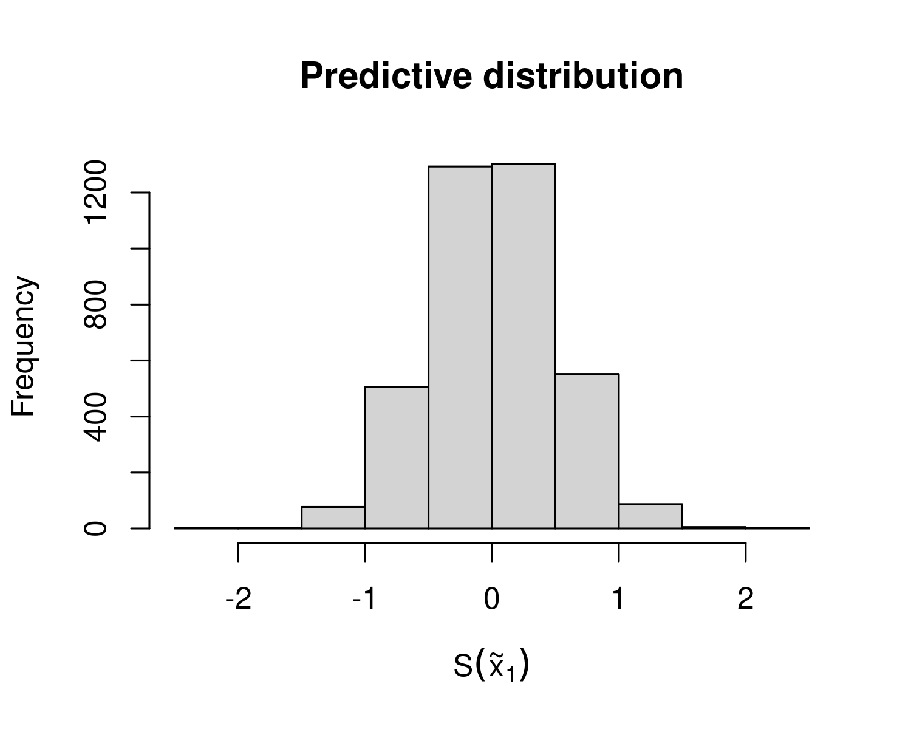
5.3 Spatially continuous targets
In the previous section, we explained and demonstrated how to obtain Monte Carlo samples from the predictive distribution of \(S(\tilde{X})\), which we denoted by \([S(\tilde{X}) \: |\: y]\). Let \(S_{(j)}(\tilde{X})\) and \([S(\tilde{X}) \: |\: y]\) represent the \(j\)-th Monte Carlo samples for the entire grid and the specific location \(x_k\), respectively, for \(j=1,\ldots,B\) and \(k=1,\ldots,q\).
We define our predictive target, \(T(x)\), at any given location \(x\), as a transformation of \(S(x)\). Thus, we express it as \(T(x) = f\{S(x)\}\). Note that \(f(\cdot)\) can represent any type of non-linear transformation of \(S(x)\) and may include covariate effects and other non-structured random effects. A list of common predictive targets frequently used in geostatistical analysis is provided in Table 5.1.
| Predictive target \(T(x)\) | Name of the predictive target | Generalized linear model (GLM) family |
|---|---|---|
| \(d(x)^\top \beta + S(x)\) | Linear predictor | Any GLM |
| \(\frac{\exp\{d(x)^\top \beta + S(x)\}}{1+\exp\{d(x)^\top \beta + S(x)\}}\) | Prevalence | Binomial |
| \(\exp\{d(x)^\top \beta + S(x)\}\) | Mean number of cases | Poisson |
| \(S(x)\) | Spatial random effects | Any GLM |
| \(d(x)^\top \beta\) | Covariates effects | Any GLM |
An important feature of the predictive targets listed in Table 5.1 is that none of them include the nugget effect, denoted by \(Z_i\) in our linear predictor definition for generalized linear geostatistical models. The reason for excluding \(Z_i\) from the predictive targets is that, in most cases, it lacks a clear, unambiguous scientific interpretation. However, \(Z_i\) might be included, for example, in environmental studies focusing on highly localized phenomena where measurement error or small-scale variability is of direct scientific interest; or in epidemiological studies where inferences at the individual level, rather than the population level, are required, and where \(Z_i\) is introduced to account for unexplained individual-level variation. It is also worth noticing, the primary impact of including \(Z_i\) in \(T(x)\) would be an increase in the uncertainty of predictive inferences for \(T(x)\), with minimal effect (or none at all, if \(T(x)\) corresponds to the linear predictor) on the point predictions.
The predictive targets in Table 5.1 corresponding to \(d(x)^\top \beta\) or the spatial random effects \(S(x)\) might be considered when the goal is to highlight the different contribution to the overall predictive inferences from the measured covariates.
5.3.1 Example: mapping riverblidness prevalence in Liberia (continuing from Section 5.2.1)
Let us continue the geostatistical of the riverblindness data in Liberia. The predictive target we consider is prevalence, hence \[T(x) = \frac{\exp\{ \beta_{0} + \beta_{1}\log\{e(x)\} + S(x)\}}{1+\exp\{\beta_{0} + \beta_{1}\log\{e(x)\} + S(x)\}}, \tag{5.1}\] where \(e(x)\) is the elevation in meters at location \(x\).
Through the pred_target_grid we can use the output in lb_pred_S_m (or lb_pred_S_j as well, in this case) to generate predictions of prevalence over the regular grid at 5 km we have created earlier.
In the function above the argument f_target can take a list of functions, as multiple predictive targets can be defined. Here, we only specified prevalence (prev). Note that in defining the predictive target in f_target, we need to express that as a function of \(d(x)^\top \beta + S(x)\). The argument include_covariates also allows us to define predictive target that do not use covariates from the model. By default include_covariates = TRUE, hence in the code above covariates are part of what is defined as lp. To predict the spatial random effects \(S(x)\) only, for example, you can set include_covariates = FALSE and f_target = list(Sx = function(lp) lp). In pd_summary, we define the summaries that we want to visualize from the predictive distribution. Here, we have specified the mean, coefficient of variation and the probability of exceeding a 20\(\%\) prevalence threshold.
We can then visualize the resulting maps as follows.
# Displying the results
par(mfrow = c(1,3))
plot(lb_prev, which_target = "prev",
which_summary = "mean", main = "Mean")
plot(lb_prev, which_target = "prev",
which_summary = "cv", main = "Coefficient of variation")
plot(lb_prev, which_target = "prev",
which_summary = "exceed20", main = "Exceedance probability")
par(mfrow=c(1,1))
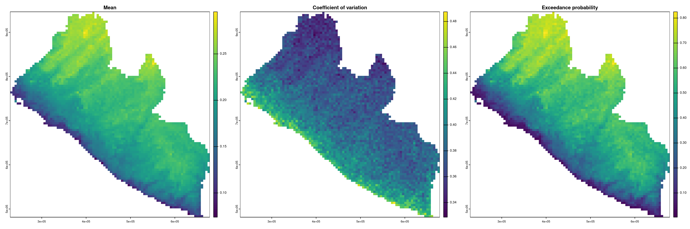
The maps in Figure 5.2 indicate a higher prevalence as we move away from the coast and at higher altitudes. A very similar spatial pattern is observed in the likelihood of exceeding 20\(\%\) prevalence. Also, based on the map of the coefficient of variation, the uncertainty around the point predictions of prevalence is higher along the coast and lower in the inland areas of Liberia.
5.3.2 Example: mapping malaria using age and elevation as predictors
We now consider an example on malaria mapping, where we use two different types of covariates: a spatially referenced covariate corresponding to elevation; the individual age. We use the malkenya_comm subset of the malkenya data-set (see Section 3.1.1.2) and, to alleviate the computational burden, we further reduce this data-set by taking the first 1000 rows. Hence, we create our new data-set, malkenya_comm1000, using the followind code.
malkenya_comm1000 <- malkenya_comm[1:1000,]
malkenya_comm1000 <- st_as_sf(malkenya_comm1000, coords = c("Long", "Lat"),
crs = 4326)
malkenya_comm1000 <- st_transform(malkenya_comm1000, crs = 32736)Based on the exploratory analysis shown in Section 3.1.1.2, we consider a geostatistical model fitted to the individual binary outcomes, \(Y_{ij}\), which correspond the rapid diagnostic test (RDT) results for the \(j\)-th individual in the \(i\)-th community, and take value \(Y_{ij}=1\) if the RDT is positive and \(Y_{ij}=0\) if the RDT is negative. Using a Binomial geostatistical model, we model the individual probability, \(p_{ij}\) of a positive RDT using the following linear predictor. \[ \log\left\{\frac{p_{ij}}{1-p_{ij}}\right\} = \beta_{0} + \beta_{1}a_{ij}+\beta_{2} \times\max\{a_{ij}-15, 0\} + \beta_{3}\max\{a_{ij}-40, 0\} + \beta_{4} e(x_i) + S(x_i), \tag{5.2}\] where \(e(x_{i})\) and \(a_{ij}\) are the elevation in meter and the age in years for the \(j\)-th individual residing at the \(i\)-th household, respectively.
When using the model in Equation 5.2 to predict RDT prevalence, a key question arises: how should we handle the age variable, which, unlike elevation, is not available as a geo-referenced covariate at all locations in the study area? The answer depends on the research question being addressed.
For instance, if the goal is to infer disease risk across different age groups, we can generate different maps for each group of interest. This can be easily achieved by fixing the value of \(a_{ij}\) to a specific age for all prediction locations. Alternatively, if the objective is to generate a predictive map for the general population, rather than for a specific age group, we must employ a probabilistic model for age and integrate out its effect.
Developing a credible probabilistic model for age is beyond the scope of this section. Instead, we demonstrate a simple yet reasonable solution which uses the empirical age distribution from the data. By random sampling from this distribution, we can then assign age values to prediction locations. The steps are as follows.
- Obtain the empirical distribution of age from the data.
- Sample with replacement from such distribution (the
samplefunction in R can be used for this purpose) as many times as the number of prediction locations, so that each grid location \(\tilde{x}\) has a value of age assigned. - Generate a sample from the predictive distribution of the target \(T(\tilde{x})\) at each of the grid locations \(\tilde{x}\).
- Repeat 1 to 3, for as many times as the samples generates from \(S(\tilde{X})\).
This approach relies on two key assumptions. First, that the age distribution is spatially neutral, i.e., it does not vary across space. Second, that the data are representative of the age distribution in the target population. In the data used for this example, we believe these assumptions are reasonable, given the relatively small study area, where age is unlikely to exhibit significant spatial variation, and the fact that the data are a random sample from the community.
In the scripts presented in the remainder of this section, we show how to generate a predictive map of prevalence for children age 15 years, and another map that instead uses the approach earlier described to remove the effect of age and generate a map of prevalence for the general population.
First, we fit the model. Note that the effect of age is not linear and we use linear splines to account for this, using the results of the exploratory analysis shown in @Section 3.1.1.2.
After fitting the model, we create a prediction grid at a spatial resolution of 500 meters and extract the values of elevation. In this analysis, due to the small size of the study area, we do not use administrative boundaries as they are too large. Instead, we use the convex hull2 of the sample locations to define the boundaries of our study area.
# Create grid from convex hull
shp_ch <- convex_hull_sf(malkenya_comm1000)
ken_grid <- create_grid(shp_ch, spat_res = 0.5)
# Get elevation raster
ken_elev <-
get_elev_raster(locations = shp_ch,
z = 9, clip = "locations")We then create the data frame of predictors where age is set to 15.
# Create the data fr
ken_predictors <- data.frame(elevation =
extract(ken_elev, st_coordinates(ken_grid)),
Age = 15)We now have all the ingredients to carry out prediction.
The code below shows how to perform the 4 steps described above to generate a predictive map for the general population. Below we use the function update_predictors to update the covariates effects that are stored in mu_pred, a list element generated as the output of pred_over_grid.
# Number of Monte Carlo samples
n_sim <- ncol(pred_age15$lp_samples)
# Number of prediction locations
n_pred <- nrow(predictors)
# The create object `pred_ken_S_i` with the goal of changing the
# coviariates effects stored in `mu_pred` according the sample values of age
pred_ken_S_i <- pred_ken_S
pred_ken_S_i$mu_pred <- matrix(NA, nrow = n_pred, ncol = n_sim)
for(i in 1:n_sim) {
# Generate n_pred samples from the empirical distribution of age
ken_predictors$Age <- sample(malkenya_comm1000$Age, n_pred, replace = TRUE)
# Generate the new covariates effects with `update_predictors` and store them in
# `mu_pred`
pred_ken_S_i$mu_pred[,i] <- update_predictors(pred_ken_S, ken_predictors)$mu_pred
}
# Prediction of prevalence
pred_aver_pop <- pred_target_grid(pred_ken_S_i,
f_target = list(prev = function(lp) exp(lp)/(1+exp(lp))))We can now plot the two maps and compare them.
par(mfrow = c(1,2))
plot(pred_age15, which_target = "prev", which_summary = "mean", main = "Prevalence (15 years)", range = c(0,0.6))
plot(pred_aver_pop, which_target = "prev", which_summary = "mean", main = "Prevalence (General population)", range = c(0,0.6))
par(mfrow = c(1,1))
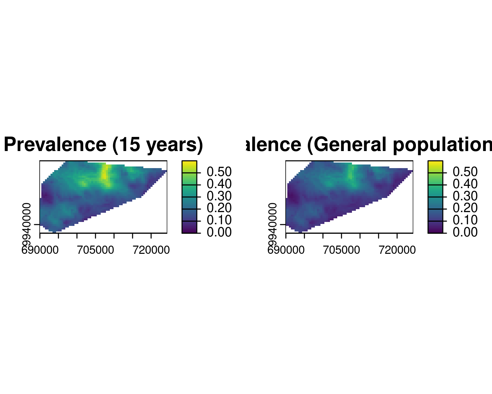
The exploratory analysis of Section 3.1.1.2 had shown that the prevalence around the age of 15 is higher than at other ages. This is also reflected in Figure 5.3, when the left panel, corresponding to the RDT prevalence for children at the age of 15 years, shows a higher level of prevalence than the right panel, which is instead for the general population.
5.4 Areal-level targets
When determining areal-level targets, we must first address the following questions:
- What spatially continuous target, \(T(x)\), are we seeking to aggregate?
- What are the spatial units, denoted as \(A_i\) for \(i = 1, \dots, N\), over which the aggregation is required?
- What aggregating function should be applied?
- Should spatial weights be incorporated in the aggregation, and if so, what weights are appropriate?
The first question was discussed in earlier sections, where examples of predictive targets that define \(T(x)\) can be found in Table 5.1. The answers to the remaining questions are context-dependent and closely linked to the primary research objectives. In public health settings, the areas \(A_i\) often correspond to administrative units or regions where decisions are made and resources are allocated.
A common aggregating function for \(T(x)\) is the mean, which is formally defined as:
\[ \mathcal{M}_i = \frac{1}{|A_i|}\int_{A_i} T(x) \: dx. \tag{5.3}\]
In addition to the mean, several other aggregating functions can be applied depending on the context of the analysis. We also note that computing the integral in Equation 5.3 requires some approximations. Our approach utilizes the regular grid \(\tilde{X}\), previously defined when dealing with spatially continuous targets. This grid covers the area \(A_i\), allowing us to approximate \(M_i\) as: \[\mathcal{M}_i \approx \frac{1}{\#\{j : \tilde{x}_j \in A_i\}} \sum_{\tilde{x}_j \in A_i} T(\tilde{x}_j), \tag{5.4}\] where \(\#\{j : \tilde{x}_j \in A_i\}\) denotes the number of grid locations \(\tilde{x}_j\) that fall within \(A_i\). The same approximation will be applied to other areal-level targets discussed in this section. However, for simplicity, we will omit the detailed explanation of this step and instead express the predictive target as an integral.
For instance, in the study of Anopheles mosquitoes in Cameroon, we may be interested in estimating the total number of mosquitoes trapped within the study area (\(A_i\) represents a single region in this case). If \(T(x)\) denotes the number of mosquitoes trapped at location \(x\), the areal-level target can be expressed as: \[ \mathcal{S}_i = \int_{A_i} T(x) \: dx. \]
Additionally, to capture the heterogeneity of \(T(x)\) within an area, variance-based measures can be used. The variance of \(T(x)\) in \(A_i\) is given by: \[ \mathcal{V}_i = \frac{1}{|A_i|}\int_{A_i} \left(T(x) - \mathcal{M}_i\right)^2 \: dx, \] where \(\mathcal{M}_i\) is the mean of \(T(x)\) in \(A_i\).
The formulation of the areal-level targets given so far assumes equal weighting for all locations within the area. Alternatively, if the we consider for example the areal level target in Equation 5.3, one could use spatial weights, \(w(x) > 0\), and redefine \(\mathcal{M}_i\) as:
\[ \mathcal{M}_i = \frac{\int_{A_i} w(x) T(x) \: dx}{\int_{A_i} w(x) \: dx}. \]
Selecting appropriate spatial weights is crucial, as it reflects the significance of different locations within the area. We can define three types of weighting: population-density, risk-based, and distance-based. We point out that this distinction is not always clear cut (population could indeed be a risk factor in our analysis) but this classification is made only for the sake of making the explanation clearer.
For example, if the goal is to prioritize areas with higher populations, weights \(w(x)\) could be proportional to population density at location \(x\). This approach gives greater importance to locations where more people reside, which can be particularly relevant when aggregating disease prevalence data for resource allocation.
In cases where certain sub-regions within \(A_i\) are at higher risk for disease (e.g., proximity to environmental hazards or areas with lower access to healthcare), risk-based weights could be applied. Here, \(w(x)\) would be higher in regions identified as higher risk, providing a more targeted aggregation of disease prevalence. For example, populations in rural areas may face higher exposure to infectious diseases than those in urban areas, making it important to assign greater weight to these higher-risk regions in the aggregation process.
If the objective is to account for proximity effects (such as the spread of an infectious disease or contamination from a known source), distance-based weights could be used. Locations closer to a known disease outbreak area or source of exposure could be given more weight to reflect the spatial dynamics of disease transmission.
Using spatial weights in these ways ensures that the aggregation of disease prevalence \(T(x)\) reflects not only the distribution of the disease but also the underlying population, risk, or spatial characteristics relevant to the public health problem under investigation.
5.4.1 Example: predicting the average riverblindness prevalence at admin level 1 in Liberia (continuing from Section 5.3.1)
We continue our analysis of the Liberia data and consider areal-level targets. More specifically, we aim to predict the average prevalence over the regions which give the administrative level 1 of Liberia. By denoting with \(A_i\) the i-th out of the 15 regions in Liberia. By denoting with \(T(x)\) reiverblindness prevalence as defined in Equation 5.1, we define our predictive target as \[
T_{i} = \frac{1}{|A_i|} \int_{A_i} T(x) \: dx.
\] The R code below shows how predictions for \(T_i\) can be performed using the pred_target_shp function.
# Admin level 1 boundaries
library(rgeoboundaries)
lb_adm1 <- geoboundaries(country = "Liberia", adm_lvl = "adm1")
# Prediction of prevalence
pred_shp <- pred_target_shp(lb_pred_S_j, shp = lb_adm1,
shp_target = function(Tx) mean(Tx),
f_target = list(prev =
function(lp) exp(lp)/(1+exp(lp))),
pd_summary = list(mean = mean),
col_names = "shapeName")The argument shp_target is used define the type of aggregation function over the region \(A_i\), in this case the mean of the target \(T(x)\). Also note that, like for spatially continuous targets, we can define any summary of the predictive distribution of \(\mathcal{M}_i\) through the argument pd_summary. Here, we chose to compute only the mean of the predictive distribution but other summaries, such as exceedance probabilities, standard error, quantiles and so on, can be specified if needed.
Before we plot the results on a map, let us also consider the population-density weighted target, defined as \[ T_{i}^* = \frac{ \int_{A_i} w(x) T(x) \: dx}{\int_{A_i} w(x) \: dx}. \] To aid the explanation of the R code script, we first rewrite the above areal-level target as \[ T_{i}^* = \int_{A_i} \tilde{w_i}(x) T(x) \: dx. \] where \(\tilde{w}_{i}(x)\) are the standardized weights that integrate to 1 in \(A_i\) (i.e. \(\int_{A_i} \tilde{w}_i(x) \: dx = 1\)).
We first retrieve the population density data from the World Pop database (see Section 2.4.2) and use these to derive the un-standardized weights \(w(x)\).
# Obtaining population density
library(wpgpDownloadR)
lbr_url <- wpgpGetCountryDataset(ISO3 = "LBR", covariate = "ppp_2014")
library(terra)
lbr_pop <- rast(lbr_url)
lbr_pop <- project(lbr_pop, "EPSG:32629")
# Extra pop density weights at the prediction grid
weights_pred <- extract(lbr_pop, st_coordinates(liberia_grid))$lbr_ppp_2014In the code above the population density weights are extracted at the locations of the prediction grid. In the pred_target_shp function, in order to use the weights for our predictive target, we need to specify two additional arguments: weights to which we pass the population density values (in our case these are stored in weights_pred); standardize_weights, which is a logical argument taking value TRUE if the weights to be standardized so that the sum over the grid covering a region \(A_i\) adds up to one.
We can then finally plot the results from the prediction at admin level 1, without using any weights and by weighing according to population density.
plot_1 <-
plot(pred_shp, which_target = "prev", which_summary = "mean",
palette = "RdYlGn",
limits = c(0.1, 0.30),
breaks = seq(0.1,0.30, by = 0.05)) +
guides(fill=guide_legend(title="Prevalence")) +
ggtitle("Average prevalence \n (no weights)") +
theme(plot.title = element_text(size = 15))
plot_2 <-
plot(pred_shp_w, which_target = "prev", which_summary = "mean",
palette = "RdYlGn",
limits = c(0.1, 0.30),
breaks = seq(0.1,0.30, by = 0.05)) +
guides(fill=guide_legend(title="Prevalence")) +
ggtitle("Average prevalence \n (population weighted)") +
theme(plot.title = element_text(size = 15))
library(gridExtra)
grid.arrange(plot_1, plot_2, ncol = 2)
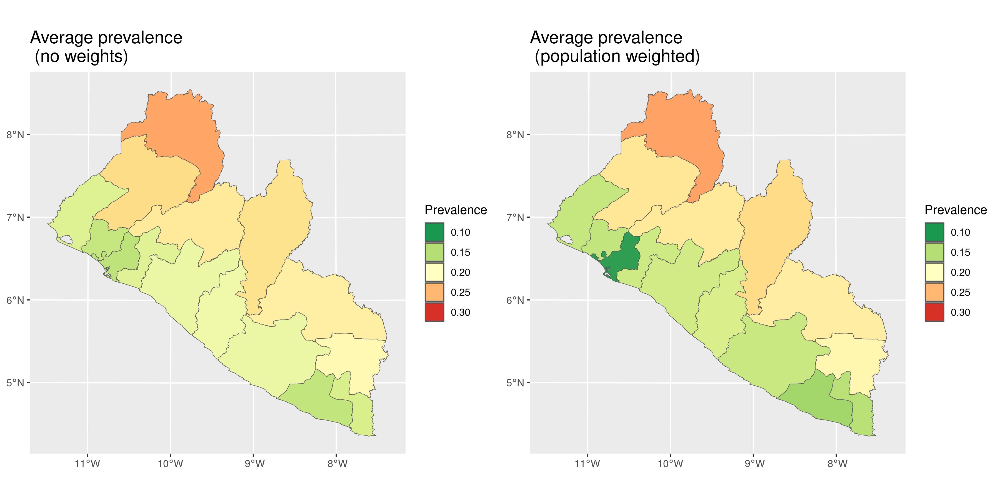
In Figure 5.4, we observe that the differences between the two predictive targets, with and without weights, are not substantial. However, we observe that the predicted average prevalence shows slightly greater variation in coastal regions, particularly in Montserrado County, where the majority of the population residing in the capital of Monrovia. This concentration of population likely accounts for the more noticeable differences in this area.
5.4.2 Example: predicting the total number of Anopheles gambiae mosquitoes (continuing from Section 3.3.2)
For the analysis on Anopheles gambiae mosquitoes, we consider the prediction of the total number of mosquitoes within the study area. In this case, because there is not a natural definition of the study area borders as in the previous analysis, we consider the convex hull as representing those borders. To pursue this let us first, visualize the predictive map of the number of mosquitoes on a regular grid cover the study area. In other words, we first consider the spatially continuous target \[ T(x) = \exp\{\beta_0 + \beta_1 e(x) + S(x)\}, \] where, we recall, \(e(x)\) is the elevation in meters at location \(x\). In the code below in addition to generate prediction for \(T(x)\), we also create a binary indicator defined as \[ w(x) = \begin{cases} 1 & \text{if } 390 < e(x) < 837 \\ 0 & \text{otherwise.} \end{cases} \] The values of 390 and 837 meters correspond to the minimum and maximum values of elevation observed in the data.
# Create grid from convex hull
shp_ch <- convex_hull_sf(an_fit$data_sf)
an_grid <- create_grid(shp_ch, spat_res = 2)
an_elev <- get_elev_raster(locations = shp_ch,
z = 9, clip = "locations")
predictors <- data.frame(elevation= terra::extract(an_elev,
st_coordinates(an_grid)))
pred_an_S <- pred_over_grid(an_fit, grid = an_grid,
predictors = predictors,
type = "joint")
pred_n_mosq_grid <-
pred_target_grid(pred_an_S,
f_target = list(n_mosq = function(lp) exp(lp)),
pd_summary = list(mean = function(Tx) mean(Tx)))
an_weights <- 1*(predictors$elevation > 390 & predictors$elevation < 837)We now define our predictive target corresponding to the total number of mosquitoes within the study area \(A\), given by the convex hull of the observed locations, as \[ T = \int_{A} w(x) T(x) \: dx \tag{5.5}\] The rationale is to estimate the total number of mosquitoes in the study area while restricting predictions to locations within the observed range of elevation. This approach helps avoid the risk of predicting in ecological areas that may not be suitable for mosquito presence. It is also important to note that in Equation 5.5, we do not standardize the weights in this case.
par(mfrow = c(1,2))
plot(pred_n_mosq_grid, which_target = "n_mosq", which_summary = "mean",
main = "Number of mosquitoes")
plot(an_grid, pch = 20, cex = 1, col = an_weights+1, main = "Weights")
par(mfrow = c(1,1))
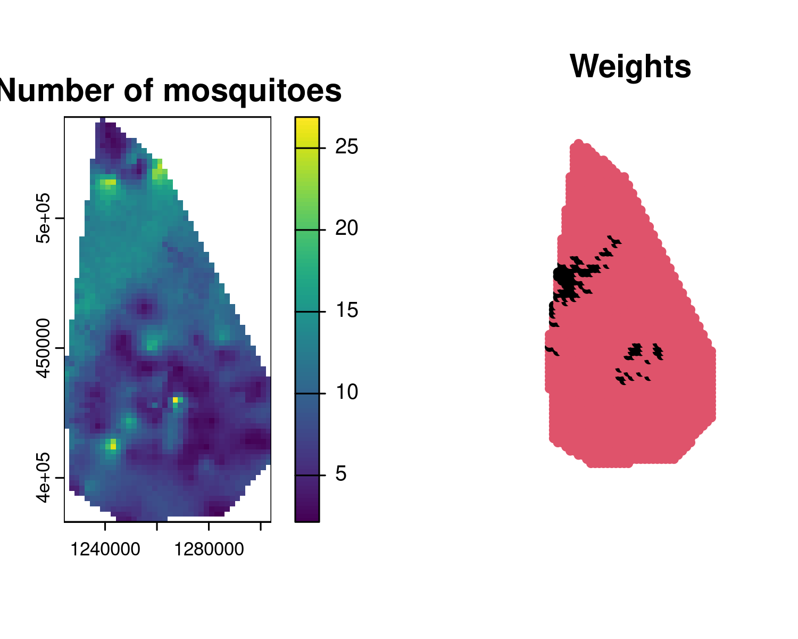
Figure 5.5 shows the prediction map for the number of mosquitoes at each prediction location, indicating a relatively high spatial heterogeneity as was also indicated by the low value for the estimate of the scale of the spatial correction (parameter \(\phi\)). The right panel, we have an image of the weights \(w(x)\), with locations that will not contribute to the prediction of the total number of mosquitoes denoted in black.
pred_n_mosq_shp <-
pred_target_shp(pred_an_S, shp = shp_ch,
weights = an_weights,
shp_target = sum,
f_target = list(n_mosq = function(lp) exp(lp)),
pd_summary = list(mean = function(Tx) mean(Tx),
q025 = function(Tx) quantile(Tx, 0.025),
q075 = function(Tx) quantile(Tx, 0.975)))
pred_n_mosq_shp$target$reg1$n_mosq
## $mean
## [1] 17715.28
##
## $q025
## 2.5%
## 14917.66
##
## $q075
## 97.5%
## 20940.22Since we are not standardizing the weights, there is no need to specify standardize_weights, as it is set to FALSE by default. In the code above, we printed the mean of the predictive distribution of \(T\) along with the 95% prediction interval. The point estimate of approximately 17,719 mosquitoes is likely an underestimate of the total number of Anopheles gambiae in the area, as the trap used to count the mosquitoes may not capture all of them, particularly those outside the immediate trapping zone or those active at different times.
5.5 Assessing the predictive performance of geostatistical models with cross-validation
In this section, we address the problem of identifying the geostatistical model that offers the best predictive performance among a set of candidates. However, we first need a clear definition of predictive performance which can be used to select suitable statistical tools that can be to used to evaluate it. Broadly speaking, predictive performance is defined by how well a model’s predictive distribution aligns with observed data. Evaluating predictive performance requires examining two key characteristics of the predictive distribution: sharpness and calibration.
5.5.1 How to split geostatistical data for model performance comparisons
To carry out the assessment and comparison of the predictive performance of geostatistical models using the methods illustrated in the following sections, the first crucial step to decide which approach to use to use split the data-set into a training set and test set. In the context of geostatistical analysis, the training set is the subset of the original data-set that is used to estimate the model parameters and then predict at the locations of the test set, which is used to assess how well the model can predict unseen data.
When splitting geostatistical data-sets for model performance evaluation, it is essential to consider the objective of the spatial prediction. Here, we consider two main prediction objectives: 1) predicting in areas disjoint from the study area where there are no data; 2) inferring the spatial surface of disease risk within a given study area. Let us give an example to better explain the difference between these two objectives. Under objective 1), if survey data exist for a specific country, say Kenya, but not for a neighboring country, say Somalia, a model trained on Kenyan data might then be used to predict disease prevalence in Somalia. In objective 2), instead, high-resolution risk maps of a health outcome might be required within a single country. The splitting of geostatistical data for predictive performance assessment should align with the intended application of the model and reflect whether the goal is to predict in entirely disjoint areas with no data (objective 1) ) or to infer the spatial surface of interest within the same study area (objective 2) ). Below, we elaborate on suitable methods for each of these two.
In the first scenario (objective 1) ), splitting the data using k-fold cross-validation with spatially coherent folds is more appropriate. These folds can be created using clustering methods such as k-means or hierarchical clustering (see Yin et al. (2024) for review of the main clustering methods). These methods group spatial locations based on their coordinates or covariates, ensuring each fold represents a distinct spatial region. This approach mimics the challenge of predicting in disjoint areas by withholding entire spatial clusters from the training data. For instance, k-means minimizes within-cluster variance to produce compact, non-overlapping groups, while hierarchical clustering organizes data into nested clusters based on a linkage criterion like geographic distance. In the code below we show an example of the use of these methods for data splitting, using the spatial_clusterin_cv function from the spatialsample package (Mahoney et al. 2023).
library(spatialsample)
set.seed(123)
liberia_sf <- liberia %>%
st_as_sf(., coords = c("long", "lat"),
crs = 4326) %>%
st_transform(.,crs = 32629)
# K-means
kmeans_liberia <- spatial_clustering_cv(liberia_sf,
v = 10, cluster_function = "kmeans")
kmeans_plot <- autoplot(kmeans_liberia) + ggtitle("K-means")
# Hierarchical clustering
hclust_liberia <- spatial_clustering_cv(liberia_sf,
v = 10, cluster_function = "hclust")
hclust_plot <- autoplot(hclust_liberia) +
ggtitle("Hierarchical clustering")
library(gridExtra)
grid.arrange(kmeans_plot, hclust_plot, ncol = 2)
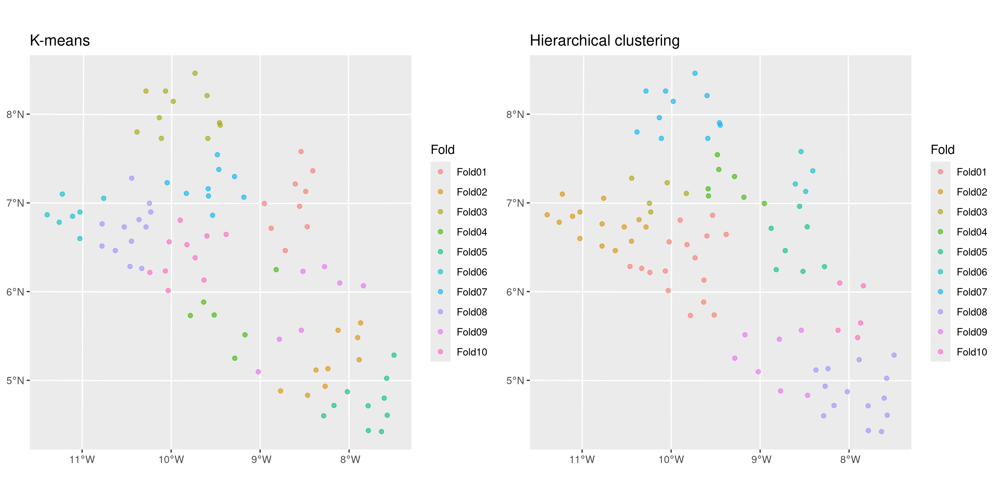
The results of the splitting are shown in Figure 5.6, where we have generated 10 folds using the k-means and hierarchical clustering methods with the default options. We can observe that the test sets are very similar, with fold 3 from the k-means and fold 7 from hierarchical clustering being identical. If using only the distance between locations to cluster the data into different folds, the choice of clustering method should have much impact on the model assessment as long as we repeat the split and assessment of the methods multiple times as we will show later in the next sections.
Before proceeding further, it is important to highlight that when the objective is predicting an outcome in entirely disjoint areas, the risks and limitations of this assessment should be carefully considered. In such cases, predictions are predominantly driven by covariates because the spatial Gaussian process \(S(x)\) cannot extrapolate spatial patterns across regions with no connecting data. When the disjoint region requiring predictions is far from the sampled data, the Gaussian process contributes primarily to inflating prediction uncertainty and has no tangible impact on the point predictions, reflecting the lack of ground data in the area. Consequently, this validation approach primarily assesses the predictive power of the covariates rather than the geostatistical model as a whole. This limitation may lead to overestimating the model’s generalization capabilities, especially if the model is being used to predict areas that are far away from the study area. Hence, the results of this validation should be interpreted cautiously, emphasizing the critical role of covariates in driving predictions under such conditions.
We now consider the second prediction objective of inferring the spatial surface within the study area. In this case, a random sampling approach can be employed. However, to preserve a good spatial coverage of the study area, a minimum distance can be imposed between selected locations. For example, methods such as spatial thinning or stratified sampling can be adapted to enforce a minimum spatial separation. This can be done in R using the subsample.distance function from the spatialEco package (Evans and Murphy 2021).
library(spatialEco)
set.seed(123)
# Regulirized spatial sampling: 30km
dist30_liberia <- subsample.distance(liberia_sf,
size = 20, d = 30000)
dist30_plot <- ggplot(dist30_liberia) + geom_sf() +
theme_minimal() +
ggtitle("Minimum distance: 30km")
# Regulirized spatial sampling: 40km
dist40_liberia <- subsample.distance(liberia_sf,
size = 20, d = 40000)
dist40_plot <- ggplot(dist40_liberia) + geom_sf() +
theme_minimal() +
ggtitle("Minimum distance: 40km")
grid.arrange(dist30_plot, dist40_plot, ncol = 2)
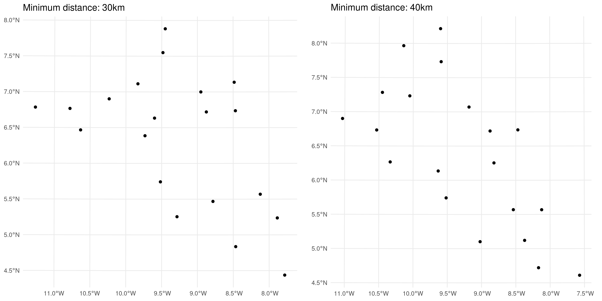
In the code above, we randomly selected 20 locations from the original data-set, enforcing minimum distances of 30 km and 40 km between points. The results are presented in Figure 5.7. The choice of the minimum distance for the test sample should ideally consider the spatial correlation scale (previously denoted by \(\phi\)) of the spatial Gaussian process \(S(X)\). To minimize correlation within the test set, the minimum distance could be set to a value greater than \(\phi\). However, increasing the minimum distance makes it more challenging to obtain a test set of the desired sample size. Reducing correlation within the test set is important for ensuring that the assessment of predictive performance is as robust as possible.
A key challenge in both approaches is the potential lack of independence between the training and test data-sets due to spatial correlation. This can lead to an overly optimistic evaluation of model performance, as the training set may already contain information that is correlated with the test set. However, if we assume that all models benefit equally from this correlation during performance evaluation, the methods we illustrate next can still provide a reliable comparison of model performance in relative terms, even if the considered performance metrics may be somewhat biased.
5.5.2 Assessing calibration using the nonrandomized probability integral transform
A model is considered well-calibrated if its predictions adequately reflect the true uncertainty of the data. Assessment of a model’s calibration can be carried out in several ways. We can examine the agreement between the point predictions, say \(\hat{y}_i\), and the observed outcomes \(y_i\), commonly referred to as accuracy. The mean squared error (MSE), defined as \(\text{MSE} = \frac{1}{n} \sum_{i=1}^n (y_i - \hat{y}_i)^2\), is an example of a commonly used metric to evaluate the accuracy of a model. To characterize calibration more fully, it is also essential to quantify the spread of the predictive distributions, which also defines the precision of predictions. For example, prediction intervals generated from the predictive distribution for \(y_i\) can help assess the precision of a geostatistical model. In summary, a well-calibrated model is both accurate and precise.
Assessment of the calibration of the model should precede the assessment of sharpness, since, as we shall see in the next section, this relies on the model being well-calibrated. The probability integral transform (PIT) was originally proposed by Dawid (1984) as a way to assess the calibration of a model. The PIT is based on the simple observation that if we consider a variable \(Y\) and apply the transformation \(Y^* = F_{Y}(Y)\), where \(F_{Y}(\cdot)\) is the cumulative density function (or cumulative distribution if \(Y\) is discrete) of \(Y\), it then follows that \(Y^*\) follows a uniform distribution in the unit interval. The fundamental problem and the reason why statistical modelling exists is that we do not \(F_{Y}\) but we would like to propose a model \(M\) that we believe adequately approximates \(F_{Y}\) with \(F_{M}\). The main advantage of using the PIT is that assessment of whether \(M\) is well calibrated reduces to assessing whether the transform set of data \(F_{M}(y_1), \ldots, F_{M}(y_n)\) follows a uniform distribution. To illustrate this, let us a consider a simple simulated example.
We first create a function that can compute the PIT.
# Define a function for the PIT
# F_M is the cumulative density function generated by the adopted model
pit_transform <- function(data, F_M) {
# Apply the model CDF to the data
pit_values <- F_M(data)
return(pit_values)
}We then apply this function to show how the assessment of calibration through the PIT is carried out under two scenarios: 1) \(F_{Y}\) is a Gamma distribution with shape 2 and scale parameter 1; 2) \(F_{Y}\) is Student’s T distribution with 3 degrees of freedom. In each of the two scenarios, we show how the PIT behaves when our model coincides with the the true model (i.e. \(F_{M} = F_{Y}\)) and when instead our model \(M\) is a Gaussian distribution, with mean and variance estimated from the data.
# Generate data from a skewed (gamma) distribution
n <- 1000
shape <- 2
rate <- 1
data_gamma <- rgamma(n, shape = shape, rate = rate)
# Define correct and incorrect model CDFs for gamma data
# Correct CDF
model_cdf_correct_gamma <- function(x) pgamma(x, shape = shape, rate = rate)
# Incorrect CDF: Assume data is normal (wrong model)
model_cdf_incorrect_gamma <- function(x) pnorm(x, mean = mean(data_gamma), sd = sd(data_gamma))
# Compute PIT values for gamma data under both models
pit_correct_gamma <- pit_transform(data_gamma, model_cdf_correct_gamma)
pit_incorrect_gamma <- pit_transform(data_gamma, model_cdf_incorrect_gamma)
# Generate data from a heavy-tailed (t) distribution
df <- 3
data_t <- rt(n, df = df)
# Define correct and incorrect model CDFs for t data
# Correct CDF
model_cdf_correct_t <- function(x) pt(x, df = df)
# Incorrect CDF: Assume data is normal (wrong model)
model_cdf_incorrect_t <- function(x) pnorm(x, mean = mean(data_t), sd = sd(data_t))
# Compute PIT values for t data under both models
pit_correct_t <- pit_transform(data_t, model_cdf_correct_t)
pit_incorrect_t <- pit_transform(data_t, model_cdf_incorrect_t)
# Combine results into a data frame for plotting
df_plot <- data.frame(
PIT = c(pit_correct_gamma, pit_incorrect_gamma, pit_correct_t, pit_incorrect_t),
Model = rep(c("Correct Gamma Model", "Incorrect Normal Model for Gamma",
"Correct t Model", "Incorrect Normal Model for t"), each = n)
)
# Plot PIT distributions
hist_plot <- ggplot(df_plot, aes(x = PIT)) +
geom_histogram(aes(y = ..density..), bins = 20, fill = "skyblue", color = "black", alpha = 0.7) +
geom_hline(yintercept = 1, linetype = "dashed", color = "red") +
facet_wrap(~ Model, scales = "free") +
labs(title = "Probability Integral Transform (PIT) Distributions",
x = "PIT Values",
y = "Density") +
theme_minimal()
# Display the plot
print(hist_plot)
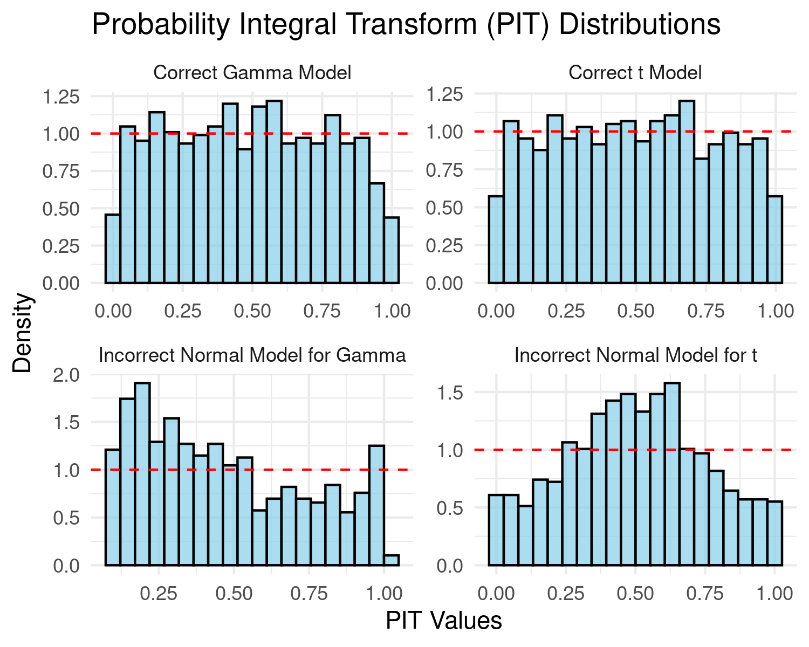
In Figure 5.8, we assess whether the PIT transformed data follow a uniform distribution if the bars of the histogram are all approximately at the same height as indicated by the dashed line. Our preference to this diagnostic plot, is to use a qq-plot for a uniform distribution as shown below.
# QQ plot to check uniformity of PIT values
qq_plot <- ggplot(df_plot, aes(sample = PIT)) +
stat_qq(distribution = qunif) +
stat_qq_line(distribution = qunif, color = "red") +
facet_wrap(~ Model, scales = "free") +
labs(title = "QQ Plot of PIT Values against Uniform Distribution",
x = "Theoretical Quantiles (Uniform)",
y = "Sample Quantiles (PIT Values)") +
theme_minimal()
# Display both plot
print(qq_plot)
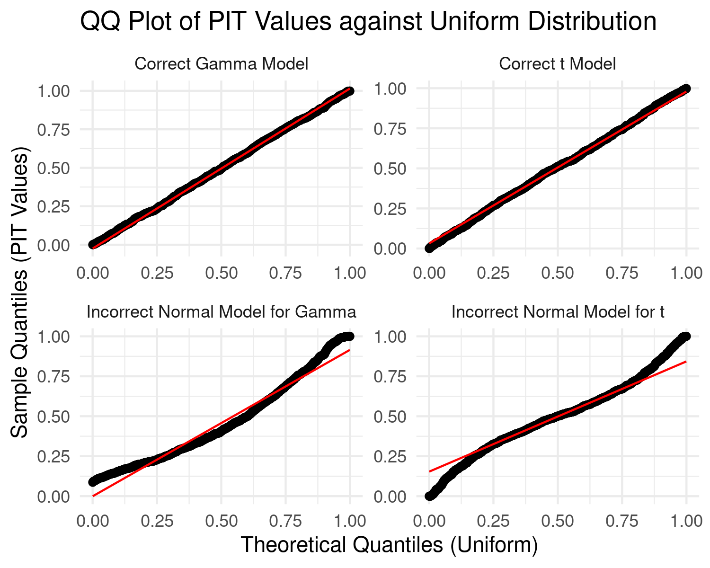
In the results of Figure 5.9, we consider a model well-calibrated if the qq-plot is as close as possible to the identity line. It is clear that in the first case the use of Gaussian distribution is violated by the skewness of the data generated from a Gamma distribution, and in the second scenario by the heavier tail of the Student’s T distribution.
In the simulated example, the PIT might seem unnecessary because we can directly assess if the data follow the assumed distribution (Gamma, Gaussian, or Student’s T) by comparing empirical and theoretical distributions. In these simple models, including linear Gaussian geostatistical models, the marginal distribution of the data is analytically available, so assessing goodness-of-fit is straightforward.
However, in the case of Binomial and Poisson geostatistical models, the marginal distribution of the data \(Y\) – unconditioned on the spatial random effects \(S(x)\) – cannot be obtained analytically. Specifically, geostatistical models for count data assume that \(Y\), conditioned on \(S(x)\), follows either a Binomial or Poisson distribution. But once we integrate out \(S(x)\) to obtain the marginal (i.e., unconditioned) distribution of \(Y\), this distribution is no longer Poisson or Binomial. Instead, it becomes an overdispersed count distribution that lacks a closed-form expression.
In such cases, the PIT becomes valuable for evaluating model adequacy, as it allows for assessing the uniformity of PIT values against the assumed model distribution, even when the marginal distribution is intractable. However, direct application of the PIT raises the issue that the the transformation \(F_{Y}(Y)\) does not follow a uniform distribution, because of the discrete nature of the random variable \(Y\). Hence, for a given discrete-outcome model \(M\), we use a modified version of the PIT, referred to as nonrandomized PIT (henceforth, nPIT), originally proposed by Czado, Gneiting, and Held (2009), taking the form \[ \text{nPIT}(u,y) = \begin{cases} 0, & u \leq F_{M}(y-1) \\ \frac{u - F_{M}(y-1)}{P_x - F_{M}(y-1)}, & F_{M}(y-1) \leq u \leq F_{M}(y) \\ 1, & u \geq F_{M}(y) \end{cases}. \] We then take the average nPIT over the observed outcomes \(y_{1}, \ldots, y_{n}\), hence \[ \text{AnPIT}(u) = \frac{1}{n} \sum_{i=1}^n \text{nPIT}(u, y_{i}). \] Assessment of calibration is then carried out by checking wether the AnPIT is as close as possible to the identity function, i.e. \(\text{AnPIT}(u) = u\). Hence, by plotting \(\text{AnPIT}(u)\) against \(u\), we can consider any deviations from the identity line as evidence that the model is not well-calibrated.
We now illustrate the use of the AnPIT through a simulated example. We simulate data from a negative Binomial distribution, with mean \(\lambda = 5\) and dispersion parameter \(\alpha = 1/2\), hence \(E[Y] = \lambda\) and \(\text{Var}[Y] = \lambda \times (1 + \alpha \lambda)\).
# Parameters for the Negative Binomial distribution
set.seed(123)
n <- 200 # number of simulations
lambda <- 5 # mean
dispersion <- 0.5 # dispersion parameter
size <- 1 / dispersion # size parameter for negative binomial
# Simulate data from the Negative Binomial distribution
sim_data_nb <- rnbinom(n, size = size, mu = lambda)
# Define the nonrandomized PIT function
compute_npit <- function(y, u, cdf_func) {
# Calculate cumulative probabilities F_M(y-1) and F_M(y) using the provided CDF function
f_y_minus_1 <- cdf_func(y - 1)
f_y <- cdf_func(y)
# Apply the piecewise formula for nPIT
if (u <= f_y_minus_1) {
return(0)
} else if (u <= f_y) {
return((u - f_y_minus_1) / (f_y - f_y_minus_1))
} else {
return(1)
}
}
# Generate a sequence of u values from 0 to 1
u_values <- seq(0, 1, length.out = 100)
# Calculate the average nPIT for each u value for both models
AnPIT_nb <- sapply(u_values, function(u) {
mean(sapply(sim_data_nb, compute_npit, u = u, cdf_func = function(k) pnbinom(k, size = size, mu = lambda)))
})
AnPIT_poisson <- sapply(u_values, function(u) {
mean(sapply(sim_data_nb, compute_npit, u = u, cdf_func = function(k) ppois(k, lambda = lambda)))
})
# Combine the results into a data frame for plotting
AnPIT_data <- data.frame(
u = rep(u_values, times = 2),
AnPIT = c(AnPIT_nb, AnPIT_poisson),
Model = rep(c("Negative Binomial (correct model)", "Poisson (wrong model)"), each = length(u_values))
)
# Plotting the average nPIT as a function of u for both models
ggplot(AnPIT_data, aes(x = u, y = AnPIT, color = Model)) +
geom_line() +
geom_abline(slope = 1, intercept = 0, linetype = "dashed", color = "black") + # Identity line
facet_wrap(~ Model) +
coord_cartesian(xlim = c(0, 1), ylim = c(0, 1)) +
xlab("u") +
ylab("AnPIT") +
theme_minimal() +
theme(legend.position = "none")
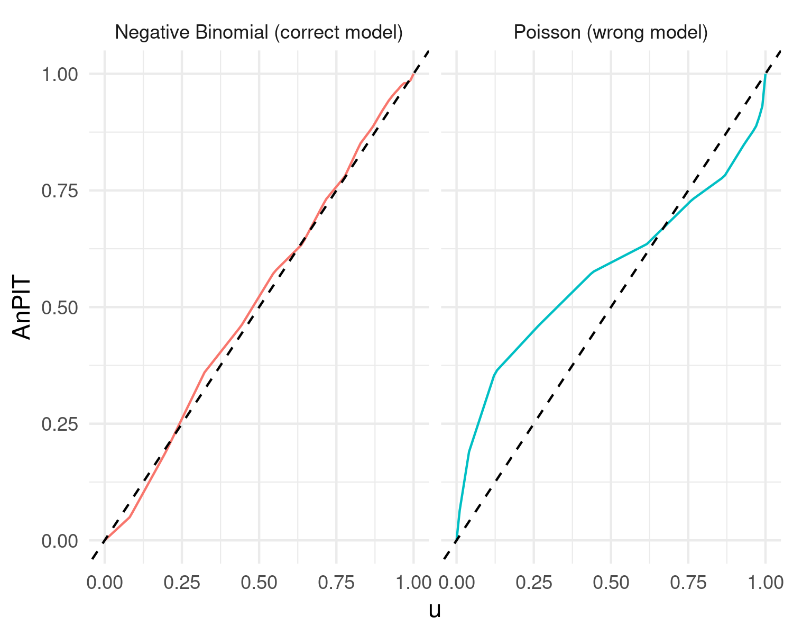
Figure 5.10 shows clear evidence that the Poisson model is not adequately accounting for the overdispersion of the simulated data from the Negative Binomial distribution.
How can we adapt this approach to generalized linear geostatistical models (GLGMs)? The concept is straightforward, though the implementation is less so (but fortunately, we have already done this in RiskMap). Essentially, in all relevant equations above, we need to replace \(M\) with the predictive distribution of the fitted geostatistical model.
To explain further, suppose we have fitted our model using data \(Y^{(1)} = \left( y^{(1)}_{1}, \ldots, y^{(1)}_{n} \right)\) (the training data-set), and we want to use another set of data \(Y^{(2)} = \left( y^{(2)}_{1}, \ldots, y^{(2)}_{m} \right)\) (the test data-set) to assess calibration; the selection of \(Y^{(1)}\) and \(Y^{(2)}\) can be done using the methods described in Section 5.5.1. Our model \(M\) in the equations above corresponds to the distribution of \(\left[ Y^{(2)} \mid Y^{(1)} \right]\) – the distribution of \(Y^{(2)}\) conditioned to \(Y^{(1)}\) derived from our geostatistical model. Since its derivation cannot be done analytically, we use Monte Carlo methods to approximate \(\left[ Y^{(1)} \mid Y^{(2)} \right]\). We discuss this in more detail in Section 5.7. However, the key point here is to understand why we perform this assessment and how to interpret the results. We next show the application of the AnPIT diagnostic to the example on riverblindess mapping in Liberia.
5.5.2.1 Example: assessing the calibration of two geostatistical models for riverblindness mapping
In our example on riverblindness mapping, we now consider two models. A mode, which we call \(M_{0}\), which is an intercept only geostatistical model, with linear predictor \[ M_{0} \: : \: \log\left\{\frac{p(x_i)}{1-p(x_i)}\right\} = \beta_0 + S(x_i) , \] and a geostatistical model, which we denote as \(M_{1}\), which uses a linear spline with a not in 150 meters, and has linear predictor \[ M_{1} \: : \: \log\left\{\frac{p(x_i)}{1-p(x_i)}\right\} = \beta_0 + \beta_{1}e(x_i) + \beta_{2}\max\{e(x_i) - 150, 0\} + S(x_i). \] The reason for using this type of linear spline in \(M_{1}\) is explained in Section 3.1.1.
Hence, we first fit the two models.
# Fitting M0
set.seed(123)
M0_fit <-
glgpm(npos ~ gp(long, lat, nugget = NULL),
den = ntest, data = liberia,
crs = 4326,
convert_to_crs = 32629,
family = "binomial", messages = FALSE)
# Fitting M1
M1_fit <-
glgpm(npos ~ elevation + pmax(elevation - 150, 0) +
gp(long, lat, nugget = NULL),
den = ntest, data = liberia,
crs = 4326,
convert_to_crs = 32629,
family = "binomial", messages = FALSE)Since the main goal of this analysis is to draw predictive inference on riverblindness prevalence within Liberia, it would be more appropriate to use a regulirized subsampling scheme to split the data. To generate the AnPIT diagnostic plot in R, we can use the assess_pp function in RiskMap
regularized <-
assess_pp(list(M0 = M0_fit, M1 = M1_fit),
which_metric = "AnPIT",
method = "regularized", min_dist = 20,
n_size = 9, iter = 10)p1 <- plot_AnPIT(regularized, combine_panels = TRUE) +
theme(plot.margin = unit(c(0.5, 0.5, 0.5, 0.5), "lines"))
p2 <- plot_AnPIT(regularized, mode = "all") +
theme(plot.margin = unit(c(0.5, 0.5, 0.5, 0.5), "lines"))
grid.arrange(p1, p2, nrow = 2, heights = c(1, 1))
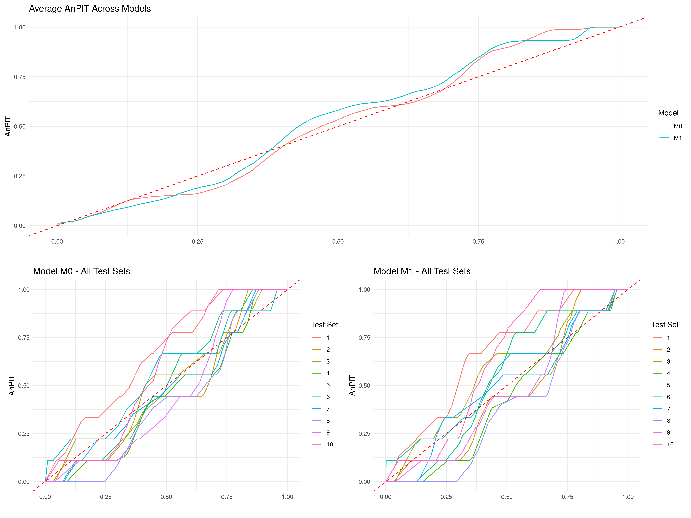
In the above function, we have used a spatially regularized sampling scheme (method = "clusterized"), where the locations are at least 20 kilometers (min_dist = 20) apart from each other to create 10 test sets (iter = 10) each of size 9 (n_size = 9) which corresponds to 10% of the original data-set. The results reported in Figure 5.11, show both the AnPIT for each of the 10 test sets and the averaged AnPIT across the 10 test sets, for both \(M_0\) and \(M_1\). The AnPIT plots show curves that are not too far from the identity line, which leads us to conclude that both \(M_0\) and \(M_1\) can be considered to be approximately well calibrated models.
Let us how if these results would change if we were to split the data using a clustering algorithm approach. We then use the assess_pp, to create 10 folds and set method = "cluster".
cluster <-
assess_pp(list(M0 = M0_fit, M1 = M1_fit),
which_metric = "AnPIT",
method = "cluster", fold = 10)p1 <- plot_AnPIT(cluster, combine_panels = TRUE) +
theme(plot.margin = unit(c(0.5, 0.5, 0.5, 0.5), "lines")) # Tighter margins
p2 <- plot_AnPIT(cluster, mode = "all") +
theme(plot.margin = unit(c(0.5, 0.5, 0.5, 0.5), "lines")) # Tighter margins
grid.arrange(p1, p2, nrow = 2, heights = c(1, 1)) # Equal heights
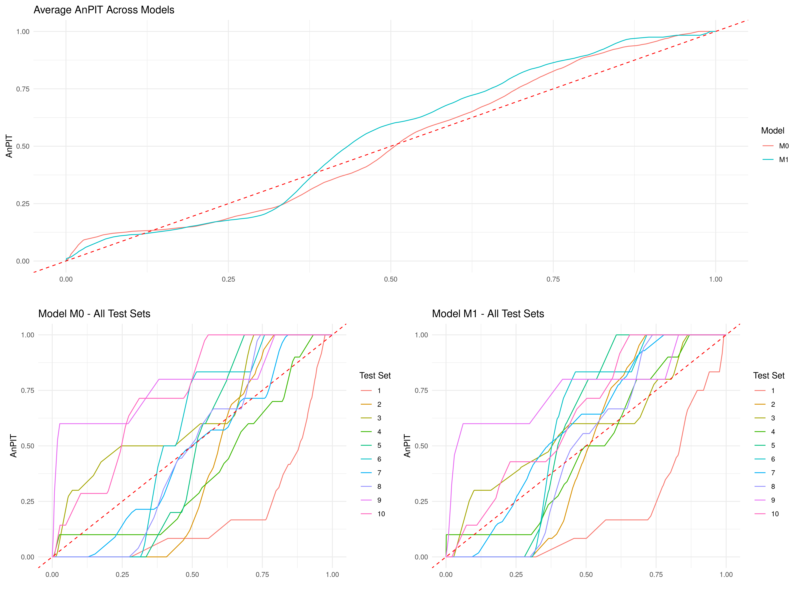
The AnPIT from Figure 5.12 show very similar results to those of Figure 5.11, hence similar conclusions are drawn.
5.5.3 Assessing calibration and sharpness using continuous ranked probability scores
We now consider another important aspect that helps to describe the predictive performance of a geostatistical model, namely sharpness. As the name suggests, sharpness refers to the spread of the predictive distribution. A sharp predictive distribution has a narrow spread, indicating that the model is highly confident in its predictions. Importantly, sharpness does not depend on how close predictions are to the true values (i.e., it is independent of accuracy). A model with high sharpness will produce predictions with low variance, but this sharpness is only meaningful if the model is well-calibrated, ensuring that the high confidence aligns with observed values. For example, a geostatistical model for disease prevalence mapping that predicts a very tight range of possible prevalence values for a location is producing sharp predictions. However, if the actual prevalence often falls outside this range, then the predictions may be sharp but poorly calibrated, thus limiting the value of quantifying sharpness alone.
To assess predictive performance while considering both sharpness and calibration, we introduce the continuous ranked probability score (CRPS) (Gneiting, Balabdaoui, and Raftery 2007) and its scaled variant, the scaled CRPS (SCRPS) (Bolin and Wallin 2023). The CRPS evaluates the agreement between the predicted cumulative distribution function of the model \(M\), which we denote as in the previous section as \(F_M\), and the observed value \(y_i\). The CRPS is formally defined as \[ \text{CRPS}(F_M, y_i) = \int_{-\infty}^\infty \left[ F_M(y) - \mathbf{1}(y \geq y_i) \right]^2 dy, \] The CRPS balances sharpness and calibration, penalizing deviations of the predictive distribution from the observation, with smaller CRPS value indicating better predictive performance.
The scaled CRPS (SCRPS), proposed by Bolin and Wallin (2023), refines this further by addressing the issue of scale dependence, which in observations with varying uncertainty. This is formally defined as \[ \text{SCRPS}(F, y_i) = -\frac{1}{2} \left[ 1 + \frac{\text{CRPS}(F_M, y_i)}{\text{CRPS}(F_M, F_M)} + \log\left\{2 \text{CRPS}(F_M, F_M)\right\} \right], \]
where \(\text{CRPS}(F_M, F_M)\) is the expectation of \(\text{CRPS}(F_M, Y)\) when \(Y\) follows the distribution \(F_M\).
The expressions for the CRPS and SCRPS may initially appear complex, but their appropriate application and interpretation lie in understanding their differences and the contexts in which each is more suitable. These differences become more intuitive when considering the more familiar concept of the standard error. The standard error of a predictive distribution represents its uncertainty, but it is not inherently standardized. In many cases, there exists a mean-variance relationship, where the variance increases with the mean. For instance, in Poisson-distributed data, higher mean values correspond to larger variances. This lack of standardization means that directly comparing predictive uncertainties across different scales can be misleading. Similarly, the CRPS is sensitive to the scale of the predictive distribution, as it penalizes errors in absolute terms, often giving disproportionate weight to observations with larger predictive uncertainty.
The SCRPS addresses this issue by standardizing predictive errors relative to the expected spread of the predictive distribution, ensuring local scale invariance. This means that the penalty for an incorrect prediction is adjusted proportionally to the scale of the predictive distribution. As a result, the SCRPS enables meaningful comparisons across observations with varying levels of uncertainty. To draw an analogy, the SCRPS standardizes the CRPS in much the same way that the coefficient of variation (CV) standardizes the standard error. By dividing the standard error by the mean of the predictive distribution, the CV expresses variability relative to the mean. This property is particularly valuable in geostatistical applications, where uncertainty often varies spatially due to factors such as non-stationarity of the predictive distribution or irregularly spaced observations.
However, while the SCRPS is more robust in settings where variability differs significantly across observations, there are contexts where the CRPS may be preferred. Specifically, in cases where greater emphasis should be placed on accurately predicting observations with larger uncertainty, the CRPS is more appropriate because it assigns greater weight to predictions with higher variance. For example, as highlighted in Bolin and Wallin (2023), when forecasting rare but impactful events (e.g., extreme weather conditions), the larger uncertainties associated with these events may naturally demand greater attention. In such scenarios, the CRPS’s sensitivity to scale can be an advantage, as it prioritizes minimizing errors for these high-variance predictions.
When evaluating the predictive performance of a model \(M\), we proceed as follows. Let \(\left(x_{1}^{(i)}, \ldots, x_{m_i}^{(i)}\right)\) represent the set of locations in the \(i\)-th test set, for \(i=1, \ldots, T\). For each location, we compute the score—either CRPS or SCRPS—and denote it as \(r_{M}\left(x_{j}^{(i)}\right)\).
To assess the overall performance of model \(M\), we calculate a weighted average of the scores across all test sets, where the weights are proportional to the sample size of each test set. The final score assigned to model \(M\) is given by: \[ \frac{1}{\sum_{i=1}^T m_i} \sum_{i=1}^{T} \sum_{j=1}^{m_i} r_{M}\left(x_{j}^{(i)}\right). \tag{5.6}\]
Models assumed to be well-calibrated and achieving a lower score based on the above expression are considered to provide sharper predictions and, consequently, better predictive performance.
5.5.3.1 Example: mapping riverblindness in Liberia (continuing from Section 5.5.2.1)
In Section 5.5.2.1, we have assessed the calibration of models \(M_0\) and \(M_0\) and found these to be reasonably well calibrated models. We now compare the predictive performance of the two, using both the CRPS and SCRPS metrics introduced previously.
The assess_pp function also allows the user to compute the CRPS and SCRPS through the argument which_metric as shown below.
Note that that assess_pp can be run once in order to obtain both the AnPIT diagnostic, introduced in Section 5.5.2; by default which_metric = c("AnPIT", "CRSP", "SCRPS") which computes all three diagnostic using the same test sets. The reason we have separated the AnPIT and the scores computations is only for pedagogical purposes.
By doing a summary of the output in regularized_scores and cluster_scores, we obtain the average score across all test sets as defined in Equation 5.6.
summary(regularized_scores, view_all = FALSE)
## Summary of Cross-Validation Scores
## ----------------------------------
## Model: M0
## Overall average across test sets:
## CRPS: -0.0384
## SCRPS: 0.2488
##
## Model: M1
## Overall average across test sets:
## CRPS: -0.0415
## SCRPS: 0.2091
summary(cluster_scores, view_all = FALSE)
## Summary of Cross-Validation Scores
## ----------------------------------
## Model: M0
## Overall average across test sets:
## CRPS: -0.0464
## SCRPS: 0.1635
##
## Model: M1
## Overall average across test sets:
## CRPS: -0.0446
## SCRPS: 0.1683In the code above, we have set view_all = FALSE to display only the overall average. If view_all = TRUE, the scores are instead reported for each test set, in addition to the overall average. The results from the summary suggest that the two models have a similar predictive performance in terms of both CRPS and SCRPS, regardless of the sampling scheme used to create the test sets. To examine this further we can plot a point map of the CRPS and SCRPS using the locations of the test sets.
# Define ranges for the color scales
crps_range <- range(c(unlist(cluster_scores$model$M0$score$CRPS),
unlist(cluster_scores$model$M1$score$CRPS)))
scrps_range <- range(c(unlist(cluster_scores$model$M0$score$SCRPS),
unlist(cluster_scores$model$M1$score$SCRPS)))
# Generate the plots with consistent color scales
p1 <- plot_score(cluster_scores,
which_score = "CRPS", which_model = "M0") +
scale_color_viridis_c(option = "C",
limits = crps_range, direction = 1)
p2 <- plot_score(cluster_scores,
which_score = "CRPS", which_model = "M1") +
scale_color_viridis_c(option = "C",
limits = crps_range, direction = 1)
p3 <- plot_score(cluster_scores,
which_score = "SCRPS", which_model = "M0") +
scale_color_viridis_c(option = "C",
limits = scrps_range, direction = 1)
p4 <- plot_score(cluster_scores,
which_score = "SCRPS", which_model = "M1") +
scale_color_viridis_c(option = "C",
limits = scrps_range, direction = 1)
grid.arrange(p1, p2, p3, p4, nrow = 2, ncol = 2)
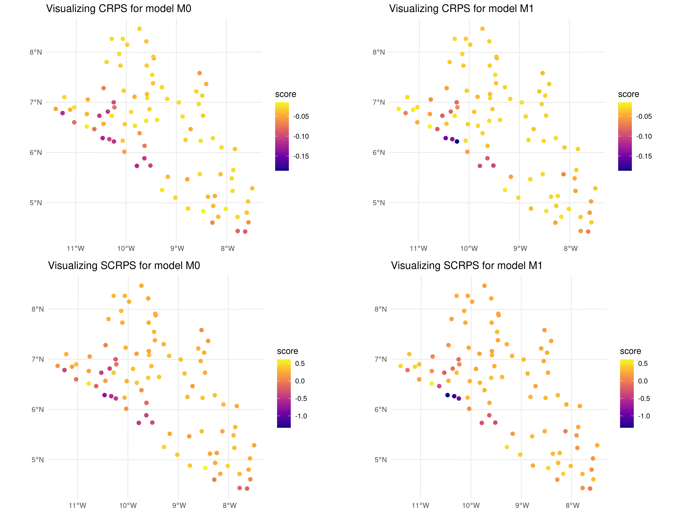
In the code above, we evaluated the cross-validation results generated using a clustering algorithm to split the original data-set. The map reveals that the scores across most locations are generally similar, with only three locations near the coast of Liberia showing slightly lower CRPS and SCRPS values for \(M_1\). This suggests a consistent predictive performance across the dataset, with some localized variations.
5.6 Simulation-based assessment of predictive performance
In Section 5.5, we illustrated how to evaluate predictive performance in relative terms, specifically by comparing candidate models under consideration. In this section, we demonstrate how simulation studies can be used to assess the predictive performance of a geostatistical model in predicting a spatially continuous target within a region of interest. Since a spatially continuous target cannot be directly observed, simulations provide a way to generate such targets under specified assumptions. This approach allows us to evaluate how effectively the model can recover the underlying spatial surface using suitable predictive performance metrics.
5.6.1 Step 1: Define the aim of the simulation study
As previously stated, one of the main reasons for carrying out a simulation study is the ability to generate spatial surfaces, which are typically unobservable in the real world. The purpose of the simulation is generally to evaluate how well a given geostatistical model can recover that surface and/or draw inferences on some of its properties.
To fully understand the how to carry out a simulation study, it is essential to define its two main components: the true model and the candidate models (which can indeed include multiple options).
The true model represents the underlying stochastic process that generates the data. In a simulation study, the true model is assumed to be known because it is explicitly specified by us. It serves as the benchmark against which other models are assessed.
The candidate models are the geostatistical models that are tested or evaluated during the simulation study. These models are proposed alternatives to approximate or recover the true spatial surface or its properties. Candidate models may differ in terms of their assumptions and model complexity.
It is important to highlight that the true model not only serves as a benchmark but can also be included among the candidate models. However, the true model does not always necessarily outperform other candidate models. In some cases, certain candidate models may provide better approximations of the spatial surface or its properties, particularly when the true model’s complexity is too high relative to the available sample size. Here, model complexity refers to the number of parameters in a model. For instance, a true geostatistical model with high complexity may include numerous covariates or a highly parameterised covariance function. When the sample size is insufficient to reliably estimate these parameters, simpler candidate models can sometimes yield better performances.
Consider an extreme example where the true model is a spatial Gaussian process \(S(x)\) with a scale parameter of \(\phi = 1\). If only a very small fraction of sampled locations are at distances below 1, estimating \(\phi\) accurately becomes highly challenging, especially with a small sample size. In particular the sparsity of close pairs reduces the information available to estimate the spatial dependence structure, making the estimation of \(\phi\) imprecise or even unreliable. In this case, a candidate model that does not attempt to explicitly estimate the spatial dependence (e.g., a model that relies solely on spatial covariates to interpolate the surface) might perform better in recovering the spatial structure. This example suggests that a simpler or alternative model can sometimes outperform the true model under specific sampling and data constraints.
At this point, a natural question arises: how should we choose the true model for a simulation study? The answer depends on the specific objectives of the study and what we aim to demonstrate. We now provide an example to demonstrate this point.
5.6.1.1 Example
In our analysis of the river blindness dataset, we now aim to evaluate the effectiveness of using elevation as a spatial predictor. To achieve this, we conduct a simulation study to compare the performance of two geostatistical models: one that incorporates elevation as a predictor and another that excludes it. This example will be revisited throughout the steps outlined in this section on simulation. We can chose the following true model (henceforth \(M_T\)) for the simulation \[M_{T}: \: \log\left\{\frac{p(x_i)}{1-p(x_i)}\right\} = \beta_{0} + \beta_{1}e(x_i) + \beta_{2}\max\{e(x_i)-150, 0\} + S(x_i). \tag{5.7}\] The true model, described by the equation above, assumes a nonlinear relationship with elevation based on a linear spline with a single knot at 150 meters. To simulate data from the true model, which constitutes the next step in our simulation study, we must first define the model parameter values. A reasonable approach is to use the maximum likelihood estimates obtained by fitting the binomial geostatistical model specified in Equation 5.7. These estimates can be derived as shown below.
# The parameters of the true model
coef(true_model)$beta
(Intercept) elevation pmax(elevation - 150, 0)
-2.002985655 0.003160402 -0.001706721
$sigma2
[1] 0.3181267
$phi
[1] 41.02334A natural candidate model to evaluate the usefulness of elevation as a covariate is an intercept-only model (referred to here as \(M_C\)). This model is defined as: \[M_{C}: \: \log\left\{\frac{p(x_i)}{1-p(x_i)}\right\} = \beta_{0} + S(x_i). \] where no covariates are included. This approach makes \(M_C\) a suitable baseline model, commonly selected when the objective is to assess the contribution of covariates to spatial prediction.
5.6.2 Step 2: Simulate the spatial surface and the data from the true model
In Section 3.3.3, we have shown how to simulate from a geostatistical model, when the goal is simulate data at the observed locations. When we want to simulate a spatial surface, a similar approach can be used. First of all, we need to generate a regular grid, say \(\tilde{X}\), covering the study region of interest, say \(A\). Based on the notation used so far, we use \(X\) to denote the set of observed locations which are used to simulate the outcome data \(Y\). Finally, we use \(X_{+} = (X, \tilde{X})\) to denote the full set of locations both on the grid and at the data points. We can then proceed through the following steps to simultaneously simulate values of the surface of interest over \(\tilde{X}\) and \(X\).
Compute the covariance matrix \(\Sigma_{+}\) using the combined set of locations \(X_{+}\).
If covariates are used, compute the covariates effects \(d(x)^\top \beta\) for all the locations in \(X_{+}\).
Simulate \(B\)-times from a multivariate Gaussian distribution with mean vector 0 and covariance \(\Sigma_{+}\) as previously defined. We denote the output form this step as \(S_{(j)}(\tilde{x})\), for simulations generate on \(\tilde{X}\), and with \(S_{(j)}(x)\) for simulations on \(X\), respectively, for \(j=1,\ldots,B\).
Compute the linear predictor at each locations of \(X_{+}\), by adding the covariates effects in 3 to the simulated random effects in 4, hence \(g\{\mu_{(j)}(\tilde{x})\} = d(\tilde{x})^\top + S_{(j)}(\tilde{x})\) for \(\tilde{X}\), and \(g\{\mu_{(j)}(x)\} = d(x)^\top + S_{(j)}(x)\) for \(X\).
Only for locations of the data \(X\), perform the steps 5A to 7A as explained in Section 3.3.3, to simulate the data \(Y\).
The function surf_sim in RiskMap can be used to carry out all these steps automatically as shown next.
5.6.2.1 Example
Following the steps previously outlined, we first create a grid within the boundaries of Liberia and extract the values of elevation on the grid from a raster.
library(rgeoboundaries)
shp <- geoboundaries(country = "liberia", adm_lvl = "adm0")
shp <- st_transform(shp, crs= 32629)
pred_grid <- create_grid(shp, spat_res = 5)
pred_grid <- st_as_sf(pred_grid)
liberia_elev <- get_elev_raster(locations = shp,
z = 5, clip = "locations")
pred_grid$elevation <- terra::extract(liberia_elev, st_coordinates(pred_grid))The function surf_sim also requires a sampling functions that generates the locations \(X\) from which data \(Y\) are simulated. In this example, we shall consider a sampling function that simply returns the locations of the original data.
The output of the sampling function must be an sf object that must contain the number of tested people and its corresponding column must be named units_m. Also, the returned sf object must have a projection that correspond to the one used when fitting the model.
We are now ready to run the surf_sim function.
In the above function, we have simulated \(B = 200\) simulations from the true model as specified in formula. The argument par0 is used to pass the values of the parameters of the true model.
We can now inspect the individual simulated surfaces using the plot_sim_surf function, as demonstrated below, which produces Figure 5.14. This step is useful verifying that the simulations are consistent with expectations and free from any warning signs or anomalies.
plot_sim_surf(lib_surf_sim, sim = 1)
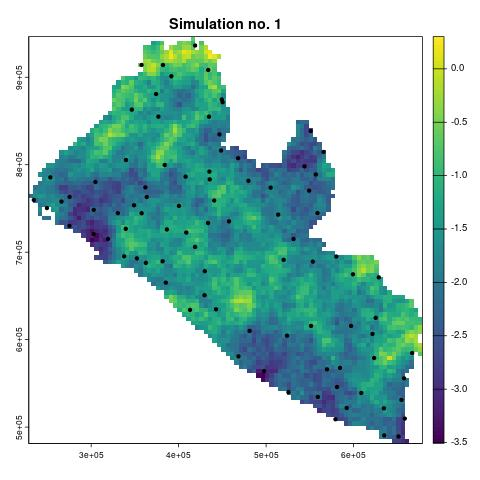
5.6.3 Step 3: Fit the candidate models to the simulated data and predict the target
To summarize, the results obtained from Step 1 and Step 2 are as follows:
- Simulated values for the linear predictor of the true model (\(M_T\)) over a grid covering the study area.
- Simulated values for the linear predictor of \(M_T\) at the data locations.
- Simulated realizations of the data at the data locations.
Next, we use the third output listed above to fit the candidate models (\(M_C\)) and make predictions over the grid. Note that each of the outputs above has been generated \(B\) times, which denotes the number of simulations.
Using the notation introduced in Section 5.3, let \(T(x)\) denote the spatially continuous target. When the predictive target is at the areal level, the necessary adjustments to Step 3 and Step 4 will be detailed in Section 5.6.5.
The outputs generated in these steps include predictive samples of the target over the grid, represented by \(T_{(j)}^{(h)}(\tilde{x})\), where: \(j\) is the index of the \(j\)-th simulated data-set, for \(j = 1, \ldots, B\); \(h\) is the index of the Monte Carlo samples, for \(h = 1, \ldots, N\), generated by the Monte Carlo Markov Chain (MCMC) algorithm for a given data-set \(j\).
An example in R for Step 3 will be provided in the next section, where we shall use the function assess_sim, from the RiskMap package, which combines Step 3 and Step 4 into a single step.
5.6.4 Step 4: Summarize the results using a pre-defined objective function
In this final step, we compare the predictions of the target \(T(x)\) against its true values, originally simulated in Step 1. To do this, we need a metric to summarize the results across all \(B\) simulations for each candidate model \(M_C\).
One approach is to use the predictive mean from \(M_C\) in each simulation and evaluate how it differs from \(T(x)\). A natural choice for this comparison is the mean squared error (MSE), defined as:
\[ \frac{1}{B} \sum_{j=1}^B \sum_{i=1}^q \left(T(\tilde{x}_i) - \hat{T}_{C}(\tilde{x}_i)\right)^2 \tag{5.8}\]
where \(\tilde{x}_i\) is the \(i\)-th location on the grid \(\tilde{X}\), \(T(\tilde{x}_i)\) represents the true value of the target, and \(\hat{T}_{C}(\tilde{x}_i)\) is the predictive mean from \(M_C\) at location \(\tilde{x}_i\).
Other options for summarizing the results include using the bias or the absolute median deviation. The bias measures the systematic error between the predicted and true values and is defined as:
\[ \frac{1}{B} \sum_{j=1}^B \sum_{i=1}^q \left(T(\tilde{x}_i) - \hat{T}_{C}(\tilde{x}_i)\right) \]
The median absolute deviation (MAD) focuses on the central tendency of the errors, providing a robust measure of variability. It is defined as:
\[ \text{median}\left(\left|T(\tilde{x}_i) - T^*_{C}(\tilde{x}_i)\right|\right), \] where \(T^*_{C}(\tilde{x}_i)\) is the median across all \(N\) the Monte Carlo samples \(T_{(j)}^{(h)}(\tilde{x})\).
5.6.4.1 Example
Using the output from the surf_sim function, named lib_surf_sim, we can use as the input to the function assess_sim which performs Step 3 and Step 4, previously outlined.
In this function, we specify the models to be assessed using the models argument, which is a list of formula objects. The formula M_T represents the true model \(M_T\), while M_C corresponds to the intercept-only model. Note that the coordinate names used in the gp() function within the formulas are converted according to the CRS specified in lib_suf_sim.
The argument f_grid_target defines our target function \(T(x)\) over the grid as a transformation of the linear predictor. Specifically, exp(x) / (1 + exp(x)) expresses disease prevalence as our predictive target over the grid. The pred_objective argument specifies the objective function from Step 4, with pred_objective = "mse" setting it to the mean squared error from Equation 5.8. Finally, spatial_scle = "grid" indicates that the objective function applies to a pixel-level target according to the grid stored in lib_surf_sim.
We can now look at the summary of res_sim_grid.
summary(res_sim_grid)Summary of Simulation Results
Mean Squared Error (MSE):
Model MSE_mean MSE_sd
M_T M_T 0.004426811 0.0009040507
M_C M_C 0.004390553 0.0008564500The results reported here present the average and standard deviation across 200 simulations for the models \(M_C\) and \(M_T\). The differences between the two models are negligible, indicating that the point predictions generated by \(M_C\) and \(M_T\) perform similarly in recovering the true prevalence surface for river blindness in Liberia.
This result should not be surprising, as estimating regression relationships with prevalence data can be challenging, potentially limiting their predictive advantage. However, incorporating covariates enhances model interpretability, allowing us to understand why the model makes certain predictions in specific areas, which an intercept-only model cannot provide. Thus, even if the model with covariates does not achieve the best predictive performance, we may still choose to retain the covariates, in this case elevation, for their interpretative value.
5.6.5 Assessessment of threshold-based classification of spatial units using geostatistical models
In this section, we address the specific problem of evaluating how effectively a geostatistical model classifies areal units into predefined categories of a disease indicator, such as prevalence. This issue is particularly relevant when dealing with areal-level targets (Section 5.4) as opposed to spatially continuous targets (Section 5.3). This prediction problem arises when policy decisions regarding interventions are often based on the classification of the areal-level target into predefined categories at the level of administrative regions; see, for example, Johnson et al. (2021) and Puranik et al. (2024).
To formalize this problem mathematically, let \(\mathcal{M}_i\) represent the true value of the areal-level target (e.g., the average prevalence over a district), and let \(\hat{\mathcal{M}}_{C,i}\) denote the corresponding prediction produced by the candidate model \(M_C\). Note that \(\mathcal{M}_i\) can be easily calculated in Step 1 during simulations from the true model (Section 5.6.1).
Now, consider that the target \(\mathcal{M}_i\) is categorized into predefined classes, which are typically thresholds or ranges of the disease indicator (such as values that define low, medium, and high levels). Denote the true membership class of areal unit \(i\) by \(\mathcal{D}_i\), which is determined based on \(\mathcal{M}_i\), and the predicted membership class by \(\hat{\mathcal{D}}_{C,i}\), determined based on \(\hat{\mathcal{M}}_{C,i}\). The goal is to assess the overall quality of the classification, which involves evaluating how well the predicted classes \(\hat{\mathcal{D}}_{C,i}\) agree with the true classes \(\mathcal{C}_i\) across all areal units and simulations. This assessment provides insight into the model’s ability to accurately classify regions according to the chosen disease indicator and thus guide effective policy decisions.
The required changes to Step 3 (Section 5.6.3) consist of simply carrying the predictions over the areal units as explained in Section 5.4.
For Step 4, which concerns how we summarize the agreement between the classification generated by \(M_C\) and the true classes \(\mathcal{D}_i\), we can proceed as follows. First, we distinguish between indicators that can be computed for a given region and those that summarize performance across all regions.
Assessing classification performance can be approached similarly to evaluating a diagnostic test. Here, true positives, true negatives, false positives, and false negatives are defined at the level of individual spatial units that subdivide the study area. Hence, key indicators include:
Sensitivity: The proportion of areal units correctly classified as belonging to the true membership class when conditioned on that true class:
\[ \text{Sensitivity} = \frac{\text{True Positives (TP)}}{\text{True Positives (TP)} + \text{False Negatives (FN)}} \]Specificity (True Negative Rate): The proportion of areal units not belonging to a given membership class that are correctly classified as not being in that class:
\[ \text{Specificity} = \frac{\text{True Negatives (TN)}}{\text{True Negatives (TN)} + \text{False Positives (FP)}} \]Positive Predictive Value (PPV): The proportion of areal units predicted to belong to a membership class that are correctly classified, conditioned on the predicted membership class:
\[ \text{PPV} = \frac{\text{True Positives (TP)}}{\text{True Positives (TP)} + \text{False Positives (FP)}} \]Negative Predictive Value (NPV): The proportion of areal units predicted not to belong to a membership class that are correctly classified, conditioned on the predicted membership class:
\[ \text{NPV} = \frac{\text{True Negatives (TN)}}{\text{True Negatives (TN)} + \text{False Negatives (FN)}} \]Correct Classification Rate: The overall proportion of areal units whose predicted membership class matches the true membership class:
\[ \text{Correct Classification Rate} = \frac{\text{True Positives (TP)} + \text{True Negatives (TN)}}{\text{Total Cases (TP + TN + FP + FN)}} \]
Note that for multiple classes, the indicators above are computed by comparing each class in turn against all other classes combined. This allows us to create a 2 by 2 table, enabling the calculation of the indicators above.
The choice between sensitivity, specificity, PPV, and NPV depends on the specific public health context and the priorities of the decision-making process. Sensitivity and specificity are conditioned on the true membership class, making them useful for assessing the model’s performance in terms of correctly identifying or excluding true positives or negatives. PPV and NPV are conditioned on the predicted membership class, making them more informative about the trustworthiness of predictions, especially when prevalence varies significantly across regions.
We can thus summarize the difference of each indicator as follows.
Sensitivity is most appropriate when the priority is to ensure that true positive cases (e.g., high-prevalence regions) are not missed. Sensitivity is useful in contexts where failing to identify true cases could have severe consequences, such as delaying critical interventions or underestimating resource needs. For example, during an outbreak, ensuring all high-risk areas are flagged is crucial, even if this increases the number of false positives.
Specificity is more suitable when the focus is on minimizing false positives, which is critical in contexts where over-classification could lead to unnecessary interventions or misallocation of resources. Specificity may be particularly important in low-prevalence scenarios, where the cost of acting on false alarms could outweigh the benefits of capturing all true positives.
PPV is appropriate when the emphasis is on the reliability of positive predictions, i.e., how confident we can be that regions classified as high-prevalence are truly high-prevalence. PPV is heavily influenced by the prevalence of the condition being classified, making it especially relevant in scenarios where actionable decisions depend on the certainty of a positive classification.
NPV is most relevant when it is critical to trust negative predictions, i.e., ensuring that regions predicted as low-prevalence are indeed low-prevalence. NPV is particularly important in low-prevalence settings, where a high proportion of predicted negatives are true negatives.
Ultimately, the selection of indicators should result from a dialogue between statisticians, epidemiologists, and policy makers, ensuring alignment with the specific priorities and policy decisions being informed by the model’s classifications.
5.6.5.1 Example
Using the same models, \(M_T\) and \(M_C\), from the river blindness example in Liberia, we now compare their performance in classifying admin level 1 regions into two prevalence categories, \((0, 0.2)\) and $(0.2, 1) $. The assessment is conducted using assess_sim, where the prevalence surface is first aggregated at the areal level before classification.
# Admin level 1 shape files
shp_adm <- geoboundaries(country = "liberia", adm_lvl = "adm1")
shp_adm <- st_transform(shp_adm, crs= 32629)
res_sim_area <- assess_sim(lib_surf_sim,
models = list(M_T = ~ elevation +
pmax(elevation - 150, 0) +
gp(long, lat),
M_C = ~ gp(long, lat)),
f_grid_target = function(x) exp(x)/(1+exp(x)),
f_area_target = mean,
pred_objective = "classify", shp = shp_adm,
categories = c(0,0.2,1),
spatial_scale = "area")The implementation first loads the admin level 1 shapefiles for Liberia, transforming them to the appropriate coordinate reference system. The arugment f_area_target is set to mean, ensuring that the target prevalence for each region is computed as the average over the area, corresponding to
\[
\frac{1}{|A|} \int_A T(x) \, dx
\] The classification is performed by specifying pred_objective = "classify", meaning the models are evaluated based on their ability to assign regions to the correct prevalence class. The categories argument defines the classification thresholds, requiring at least three values to distinguish between two classes. The spatial_scale is set to "area", meaning predictions are made at the level of administrative regions which are specified by the shapefile shp_adm, passed to the argument shp.
Finally, we can examine the results of the simulation through the summary function.
summary(res_sim_area)Summary of Simulation Results
Classification Results:
Model: M_T
Averages across simulations by Category:
Sensitivity Specificity PPV NPV CC Class
1 0.9020851 0.8151707 0.8923583 0.8654312 0.9020851 (0,0.2]
2 0.8151707 0.9020851 0.8654312 0.8923583 0.8151707 (0.2,1]
Proportion of Correct Classification (CC) across categories:
Mean: 0.871, 95% CI: [0.665, 1.000]
Model: M_C
Averages across simulations by Category:
Sensitivity Specificity PPV NPV CC Class
1 0.9048404 0.7974989 0.8890838 0.8581346 0.9048404 (0,0.2]
2 0.7974989 0.9048404 0.8581346 0.8890838 0.7974989 (0.2,1]
Proportion of Correct Classification (CC) across categories:
Mean: 0.868, 95% CI: [0.600, 1.000]In this example, the performance of models \(M_T\) and \(M_C\) is comparable across all considered indicators. This similarity arises for the same reasons previously discussed examining the quality of prevalence surface predictions.
5.7 Theory
5.7.1 Expression of the predictive distribution for a linear geostatistical model
In this section, we consider the simple case of a linear geostatistical model with a single observation per location.
Let \(Y = (Y_1, \ldots, Y_n)^\top\) be the vector of data associated with spatial locations \(x_1, \ldots, x_n\). The model assumes that:
\[\begin{equation} Y_i = d(x_i)^\top {\beta} + S(x_i) + Z_i, \quad i = 1, \ldots, n, \end{equation}\]
where \(d(x_i)\) is a vector of covariates at location \(x_i\), \({\beta}\) is a vector of regression coefficients, \(S(x)\) is a stationary Gaussian process with mean zero and Matern correlation function \(\rho(u)\) (where \(u\) is the distance between locations), and \(Z_i \sim \mathcal{N}(0, \tau^2)\) represents independent measurement errors (nugget effect).
We first consider the simple case of a linear target, hence \(T(x) = d(x)^\top {\beta} + S(x)\). The goal is to predict the unobserved process \(T^* = (T_{n+1}, \ldots, T_{n+q})^\top\) at new locations \(x_{n+1}, \ldots, x_{n+q}\). The predictive distribution of \(T^*\), conditional on the observed data \(Y\), follows a multivariate Gaussian distribution:
\[\begin{equation} T^* | Y \sim \mathcal{N}(\mu^*, \Sigma^*), \end{equation}\]
where the conditional mean and covariance are given by:
\[\begin{align} \mu^* &= D^* {\beta} + C \Sigma^{-1} (Y - D {\beta}), \\ {\Sigma}^* &= V - C \Sigma^{-1} C^\top. \end{align}\]
Here, \(D^*\) is the design matrix for the prediction locations, \(C\) is the cross-covariance matrix between \(T^*\) and \(Y\), \(\Sigma\) is the covariance matrix of \(Y\), and \(V\) is the covariance matrix of \(T^*\). Using a multivariate Gaussian distribution with mean \(\mu^*\) and covariance matrix \(\Sigma^*\), we are now able to predict \(T^*\) and obtain summaries of uncertainties.
For non-linear prediction targets, i.e. targets that involve non-linear transformations of the spatial process \(S(x)\), say \(W(T^*)\), Monte Carlo methods can be employed. More specifically, we generate samples \(T_{(j)}^*\), for \(j=1,\ldots,B\) from the predictive distribution \(T^* | Y\) using the multivariate Gaussian distribution with mean \(\boldsymbol{\mu}^*\) and covariance \(\boldsymbol{\Sigma}^*\). For each sample \(T^{*}_{(j)}\), the non-linear transformation \(W(T^{*}_{(j)} = W^{*}_{(j)}\) of interest is then computed. The predictive summary statistics, such as the mean, variance, or quantiles of \(W(T^*)\), are then estimated by averaging over the simulated samples, e.g.
\[\begin{align} E[W(T^*) | Y] &\approx \frac{1}{B} \sum_{J=1}^B W^{*}_{(j)}), \\ \mathrm{Var}[W(T^*) | Y] &\approx \frac{1}{B-1} \sum_{j=1}^B \left( W^{*}_{(j)} - E[W(T^*)] \right)^2. \end{align}\]
For more detailed explanations on this we refer you to Chapter 6 of P. Diggle and Ribeiro (2007).
5.7.2 A brief overview of scoring rules
We now provide an overview of the theoretical framework of scoring rules, of which the continuous ranked probability score (CRPS) and its scaled variant (SCRPS), previously presented, are an example. Scoring rules are a tool used in the evaluation of probabilistic forecasts. As shown for CRPS and SCRPS, scoring rules are designed to measure how well a predictive distribution aligns with observed outcomes, balancing both calibration and sharpness.
In general, a scoring rule is a function \(G(F, y)\) that assigns a numerical score to a predictive distribution \(F\) and an observed outcome \(y\). Lower scores typically indicate better predictive performance, as they reflect a closer match between the predicted distribution and the observed value.
A central concept in the theory of scoring rules is that of proper scoring rules. A scoring rule is said to be proper if it favours honest predictions or, in other words, if the expected score is minimized when the predictive distribution \(F\) matches the true data-generating distribution \(F^*\). More formally, a scoring rule \(G\) is proper if, for all distributions \(F\) and \(F^*\), we have: \[ E_{Y \sim F^*}[G(F^*, Y)] \leq E_{Y \sim F^*}[G(F, Y)], \] with equality if and only if \(F = F^*\) when the rule is strictly proper. This property is crucial because it ensures that forecasters cannot improve their scores by manipulating their predictions to deviate from their true beliefs.
Proper scoring rules encourage the selection of models that yield predictions that are both well-calibrated (reflecting the true distribution of outcomes) and sharp (concentrated around likely values). However, this does not imply that predictions from the (unknown) true model \(F^*\) will always be favoured in practice, when dealing with finite samples. In other words, even if two scoring rules are proper, this does not guarantee that the true data-generating model will always achieve a lower score compared to a misspecified model in finite samples. Sample variability can in fact lead to the selection of a misspecified model by chance, especially when the sample size is small or the data are noisy. Model complexity is another important factor. If the true model \(F^*\) is highly parameterised and the sample size is insufficient to estimate its parameters accurately, it may perform poorly in predictive tasks due to overfitting or parameter estimation error. In contrast, a simpler misspecified model, despite not capturing the full complexity of the data-generating process, might generalize better in such scenarios. This is related to the bias-variance trade-off, where a model with higher bias (due to misspecification) can still achieve lower overall predictive error if it has substantially lower variance.
The CRPS and SCRPS are examples of a strictly proper scoring rule for continuous outcomes. Other scoring rules are the following:
Logarithmic Score (or Log Score): For a predictive density \(f(y)\), the log score is defined as: \[ G_{\text{log}}(f, y) = -\log f(y). \] This rule heavily penalizes low-probability predictions for observed outcomes, making it sensitive to the tails of the predictive distribution.
Brier Score: For binary outcomes, the Brier score measures the mean squared difference between the predicted probability \(p\) of an event and the actual outcome \(y \in \{0, 1\}\): \[ G_{\text{Brier}}(p, y) = (p - y)^2. \] The Brier score is both proper and easy to interpret, with connections to mean squared error in classical regression.
Energy Score: A generalization of the CRPS to multivariate outcomes, the energy score for a predictive distribution \(F\) and observation \(y\) is given by: \[ G_{\text{energy}}(F, y) = E_{X, X' \sim F}[\|X - X'\|] - 2 E_{X \sim F}[\|X - y\|], \] where \(\|\cdot\|\) denotes a norm, typically the Euclidean norm. The energy score is particularly useful for evaluating spatial or multivariate forecasts.
Many proper scoring rules, including the CRPS, can be decomposed into components that separately capture calibration and sharpness. This decomposition helps to understand the different aspects of predictive performance. Specifically, the expected score can often be expressed as: \[ E[G(F, Y)] = \underbrace{\text{Uncertainty}}_{\text{inherent in data}} - \underbrace{\text{Resolution}}_{\text{sharpness of predictions}} + \underbrace{\text{Reliability}}_{\text{calibration error}}, \] where: - Uncertainty represents the inherent variability in the data, independent of the model. - Resolution quantifies the model’s ability to produce sharp, confident forecasts. - Reliability (or calibration error) measures the degree to which the forecast probabilities align with observed frequencies.
This decomposition highlights an important trade-off: improving sharpness without compromising calibration is the hallmark of a good probabilistic model. A model that produces overly sharp forecasts may suffer from poor calibration, while a model that is perfectly calibrated but overly diffuse lacks resolution.
As we have shown in this chapter, scoring rules are particularly appropriate in cross-validation frameworks, where the goal is to evaluate how well a model predicts future data realizations. When instead conducting simulation studies, we generate data from a known simulated true surface which becomes our benchmark. Hence, in simulation studies, we do not perform cross-validation but, for a given simulation, we compare the model predictions against the true surface. In such cases, scoring rules are not used because they are designed to assess predictive performance based on observed data, where both calibration and sharpness are critical considerations. Hence, in simulation studies, prediction performance metrics, such as bias, mean squared error (MSE), or other distance-based metrics that directly quantify the deviation from the known truth can be used to quantify the predictive performance of a model.
For a more detailed explanation of scoring rules, Gneiting, Balabdaoui, and Raftery (2007) is a recommended read.
5.8 Summary
In this chapter, we have demonstrated how geostatistical models can be used to draw predictive inference for targets that are spatially continuous (e.g., a prevalence surface within a study region) and aggregated at the areal level (e.g., the average disease prevalence in a district). The fundamental concept underpinning geostatistical prediction is that of the predictive distribution, which we define as the distribution of the target \(T(x)\) conditioned on the data \(y\). This distribution is the key element that enables the derivation and computation of point predictions, predictive intervals and the probability that the target falls within a pre-specified interval or above/below a given threshold.
To assess the predictive performance of a geostatistical model, we have considered two complementary approaches: cross-validation and simulation studies.
In the cross-validation framework, the concepts of calibration and sharpness are introduced to evaluate the quality of spatial predictions. Calibration refers to the agreement between the predicted probability of an event occurring and its actual observed frequency. Sharpness, on the other hand, quantifies the concentration of the predictive distribution around its point estimate. However, sharper predictions are not necessarily better; they must be well-calibrated to be meaningful. Thus, it is appropriate to discuss sharpness only in the context of well calibrated models.
A simulation study, unlike cross-validation, allows us to assess the ability of our model to predict an entire spatial surface within a study area or a predictive target defined over spatial units (e.g., districts) that make up the study area. This is possible because, in a simulation study, we can generate data from a true model and then evaluate the quality of inferences from candidate models on the simulated surface. The way we summarize predictive performance in a simulation study depends on the objective. If the goal is to assess how closely our point predictions align with the true surface, we can use metrics such as the mean squared error (Equation 5.8), averaged over the grid used to approximate the surface. Conversely, if the objective is to evaluate classification performance by categorizing spatial units into predefined health outcome categories, we can use sensitivity, specificity, negative predictive value, and positive predictive value. The choice of metric depends on whether the priority is minimizing errors in detecting true positives or true negatives (sensitivity and specificity), or ensuring that the spatial units classified as positive or negative are truly so (positive predictive value and negative predictive value). A summary of the metrics considered in this chapter is given in Table 5.2.
| Diagnostic/Metric | Performance characteristic | Recommended use in |
|---|---|---|
| Bias | Accuracy | Simulation |
| Continuous ranked probability score (CRPS) | Calibration and sharpness | Cross-validation |
| Coverage probability | Calibration | Cross-validation and simulation |
| Mean square error | Accuracy | Simulation |
| Nonrandomized probability integral transform (PIT) | Calibration | Cross-validation |
| PIT | Calibration | Cross-validation |
| Scaled CRPS | Calibration and sharpness | Cross-validation |
5.9 FAQs
- What should be the spatial resolution of the grid used for prediction?
The choice of spatial resolution for the prediction grid involves a trade-off between computational efficiency and the ability to capture spatial correlation. Higher spatial resolution provides more detailed predictions but increases computational demands. A reasonable approach is to ensure that the distance between adjacent grid pixels is small enough to maintain a high spatial correlation. For instance, selecting a resolution where the correlation between neighboring pixels is at least 0.95 can be a useful guideline. However, this threshold is somewhat arbitrary, similar to the convention of using 0.95 in confidence intervals. Ultimately, the resolution should be chosen based on the spatial scale of variation in the data, while avoiding excessive computational burden.
- I have covariates with different spatial resolutions. Which spatial resolution should I use?
Two main approaches can be considered for handling covariates at different spatial resolutions in geostatistical analysis. The first involves aggregating all covariates to the coarsest resolution, ensuring consistency and avoiding artificial detail. This prevents high-resolution predictions based on low-resolution data but may sacrifice fine-scale spatial variation. The second approach disaggregates covariates to the finest resolution, enabling higher-detail predictions but risking false precision and artifacts if the data do not support such resolution. To assess the impact on inferences, one might apply both approaches and evaluate how they influence the final results.
- My prediction map looks like noise. What could be the error?
The prediction map appearing noisy could be due to several factors. First, one should verify that the spatial grid was created correctly by plotting it alongside the original data to ensure alignment and consistency. Second, the spatial correlation in the data might be very small relative to the resolution of the grid, causing the model to struggle with capturing meaningful patterns. To address this, increasing the spatial resolution of the grid may help, as finer resolution can better capture the underlying spatial structure.
- The main goal of my analysis is to carry out predictions of the main outcome. However, can I also use the model to draw inferences on the association between the outcome and the covariates that I have included in the model?
The model developed for prediction, in theory, should not be primarily used to draw inferences on the regression relationships between the outcome and covariates. Understanding regression relationships and making predictions are distinct goals that often require different modeling approaches. While it is possible to interpret the estimated regression coefficients, caution is necessary, as these associations are not causative. Predictive models are optimized for accuracy in predicting th outcome rather than for identifying or explaining underlying relationships, so any inferences drawn should be treated as exploratory rather than definitive. An recommended reading on this topic is Shmueli (2010).
- In my model I have some covariates that are attached to the individual (e.g. age, gender, occupation, etc.). How do I specify them when doing prediction?
The answer to this question is given in Section 5.3.2.
5.10 Review questions
- What are the steps that needs to taken when performing spatial prediction?
- Define the predictive distribution of a predictive target and explain how this is used to answer a research question.
- Distinguish between spatially continuous and areal-level targets, giving at least two examples for each.
- Explain the difference between marginal and joint predictions, and for which targets each can be used.
- Define predictive performance in terms of calibration and sharpness.
- Explain how calibration can be assessed using graphical tools, by distinguishing between continuous and count outcomes.
- Give examples of metrics that can be used to evaluate calibration and sharpness.
- Explain how simulation studies can be carried to assess the predictive performance of geostatistical models and how this differ from cross-validation.
5.11 Exercises
Parametric bootstrap. Using the model fitted to the Anopheles gambiae mosquitoes in Section 3.3.2, simulate 1000 data-sets using the
glgpm_simfunction and estimate the model to each of the simulated data-set. Use the resulting 1000 estimates to compute 95\(\%\) confidence intervals for each of the model parameters and compare this with the confidence intervals obtained from the model summary.Using the code from Section 5.5, redraw the plot of Figure 5.10 by choosing different values for the dispersion parameter of the Negative Binomial distribution. What happens when \(\alpha\) is close to 0 and why?
Consider the example in Section 5.5.2.1. Fit a third model, that extends \(M1\) by adding a nugget effect, hence \[ M_{2} \: : \: \log\left\{\frac{p(x_i)}{1-p(x_i)}\right\} = \beta_0 + \beta_{1}e(x_i) + \beta_{2}\max\{e(x_i) - 150, 0\} + S(x_i) + Z_i. \] Generate the AnPIT plot for \(M_2\) and compare it to those of \(M_0\) and \(M_1\). Make sure to apply the function
assess_ppto all three models so that the same test sets are used. Is \(M_2\) showing a better calibration? Why?In the analysis of the Anopheles gambiae moqsuitoes data, consider two models. One that uses elavation, with linear predictor \[ M_1\: : \: \log\{\lambda(x_i)\} = \beta_0 + \beta_1 e(x_i) + S(x_i) \] where \(e(x)\) is the elevation in meters at location \(x\) and \(S(x_i)\) is a stationary and isotropic Gaussian process with variance \(\sigma^2\) and exponential correlation function \(\rho(u) = \exp\{-u/\phi\}, \phi>0\). Consider also an intercept only model \[ M_0\: : \: \log\{\lambda(x_i)\} = \beta_0 + S(x_i). \] After fitting both models to the data, assess if they are well calibrated models using the average nonrandomized probability integral transform (AnPIT). Assuming both models are well-calibrated, compare the predictive performance using continuous ranked probability score (CRPS) and the scaled CRPS. In doing this, use different sampling schemes to split the data, as illustrated in Section 5.5.1, and assess if and how the adopted approach to split the data affects the results.
Consider the Liberia data-set on riverblindess. Carry out a simulation study where the objective is to assess the impact of mispecifying non-linear relationships between elevation and prevalence. Consider Equation 5.7 as the true model and a model that specifies the relationship as linear on the logit scale as the candidate model, hence \[M_{C}: \: \log\left\{\frac{p(x_i)}{1-p(x_i)}\right\} = \beta_{0} + \beta_{1}e(x_i) + S(x_i). \] Carry out 200 iterations in the simulation and define a suitable metric of predictive performance to compare the two models. Provide a clear answer on the impact of assuming a linear relationship with elevation when this is not valid.
Here, we are overlooking the fact that when \(T(x)\) is a linear transformation of \(S(x)\) and the the model fitted to the data is a linear geostatistical model, then we can derive any summary of the predictive distribution analytically, without the need of carrying out any simulation. Although this may displease some of our fellow statisticians who care about computational efficiency, for pedagogical reasons, here we have chosen to explain only the Monte Carlo based approach, which works in all scenarios.↩︎
The convex hull of a set of spatial locations is the smallest possible shape (usually a polygon) that completely encloses all the points, such that if you take any two points inside the shape, the straight line connecting them is also entirely inside the shape. In simple terms, it can be thought of as stretching a rubber band around the outermost points in a set, and the shape the rubber band forms is the convex hull.↩︎